Home
üëã Welcome to gb-asm-tutorial! This tutorial will teach you how to make games for the Game Boy and Game Boy Color.
⚠️
While the Game Boy and Game Boy Color are almost the same console, the Game Boy Advance is entirely different. However, the GBA is able to run GB and GBC games! If you are looking to program GBC games and run them on a GBA, you’re at the right place; however, if you want to make games specifically for the GBA, please check out Tonc instead.
Controls
There are some handy icons near the top of your screen!
- The “burger” toggles the navigation side panel;
- The brush allows selecting a different color theme;
- The magnifying glass pops up a search bar;
- The world icon lets you change the language of the tutorial;
- The printer gives a single-page version of the entire tutorial, which you can print if you want;
- The GitHub icon links to the tutorial’s source repository;
- The edit button allows you to suggest changes to the tutorial, provided that you have a GitHub account.
Additionally, there are arrows to the left and to the right of the page (they are at the bottom instead on mobile) to more easily navigate to the next page.
With that said, you can get started by simply navigating to the following page :)
Authors
The tutorial was written by Eldred “ISSOtm” Habert, Evie, Antonio Vivace, LaroldsJubilantJunkyard and other contributors.
Contributing
You can provide feedback or send suggestions in the form of Issues on the GitHub repository.
We’re also looking for help for writing new lessons and improving the existing ones! You can go through the Issues to see what needs to be worked on and send Pull Requests!
You can also help translating the tutorial on Crowdin.
Licensing
In short:
- Code within the tutorial is essentially public domain, meaning that you are allowed to copy it freely without restrictions.
- You are free to copy the tutorial’s contents (prose, diagrams, etc.), modify them, and share that, but you must give credit and license any copies permissively.
- This site’s source code can be freely copied, but you must give a license and copyright notice.
Full details, please follow these links for more information on the respective licenses:
- All the code contained within the tutorial itself is licensed under CC0. To the extent possible under law, all copyright and related or neighboring rights to code presented within GB ASM Tutorial have been waived.
- The contents (prose, images, etc.) of this tutorial are licensed under a Creative Commons Attribution-ShareAlike 4.0 International License.
- Code used to display and format the site is licensed under the MIT License unless otherwise specified.
Roadmap
The tutorial is split into three sections. I strongly advise you go through the tutorial in order!
In Part Ⅰ, we run our first “Hello World!” program, which we then dissect to learn what makes the Game Boy tick.
In Part Ⅱ, we program our first game, a clone of Arkanoid; we learn how to prod the hardware into having something we can call a “game”. Along the way, we will make plenty of mistakes, so we can learn how to debug our code.
And finally, Part Ⅲ is about “advanced” use of the hardware, where we learn how to make even better-looking games, and we program a Shoot ’Em Up!
We hope this tutorial will work for you.
But if it doesn’t (the format may not work well for everyone, and that’s okay), I encourage you to look at some other resources, which might work better for you.
It’s also fine to take a break from time to time; feel free to read at your own pace, and to ask for clarifications if anything isn’t clear to you.
This tutorial is a work in progress.
Help
If you are stuck in a certain part of the tutorial, want some advice, or just wish to chat with us, the GBDev community chat is the place to go! The authors actively participate there so don’t be afraid to ask questions! (The “ASM” channel should be the most appropriate to discuss the tutorial, by the way.)
If you prefer email, you can reach us at tutorial@<domain>, where you replace <domain> with this website’s domain name.
Anti-spam measure, I hope you understand.
Setup
First, we should set up our dev environment. We will need:
- A POSIX environment
- RGBDS v0.5.1 (though v0.5.0 should be compatible)
- GNU Make (preferably a recent version)
- A code editor
- A debugging emulator
‚ùìüòï
The following install instructions are provided on a “best-effort” basis, but may be outdated, or not work for you for some reason. Don’t worry, we’re here to help: ask away, and we’ll help you with installing everything!
Tools
Linux & macOS
Good news: you’re already fulfilling step 1! You just need to install RGBDS, and maybe update GNU Make.
macOS
At the time of writing this, macOS (up to 11.0, the current latest release) ships a very outdated GNU Make.
You can check it by opening a terminal, and running make --version, which should indicate “GNU Make” and a date, among other things.
If your Make is too old, you can update it using Homebrew’s formula make.
At the time of writing, this should print a warning that the updated Make has been installed as gmake; you can either follow the suggestion to use it as your “default” make, or use gmake instead of make in this tutorial.
Linux
Once RGBDS is installed, open a terminal and run make --version to check your Make version (which is likely GNU Make).
If make cannot be found, you may need to install your distribution’s build-essentials.
Windows
The sad truth is that Windows is a terrible OS for development; however, you can install environments that solve most issues.
On Windows 10, your best bet is WSL, which sort of allows running a Linux distribution within Windows. Install WSL 1 or WSL 2, then a distribution of your choice, and then follow these steps again, but for the Linux distribution you installed.
If WSL is not an option, you can use MSYS2 or Cygwin instead; then check out RGBDS’ Windows install instructions. As far as I’m aware, both of these provide a sufficiently up-to-date version of GNU Make.
If you have programmed for other consoles, such as the GBA, check if MSYS2 isn’t already installed on your machine. This is because devkitPro, a popular homebrew development bundle, includes MSYS2.
Code editor
Any code editor is fine; I personally use Sublime Text with its RGBDS syntax package; however, you can use any text editor, including Notepad, if you’re crazy enough. Awesome GBDev has a section on syntax highlighting packages, see there if your favorite editor supports RGBDS.
Emulator
Using an emulator to play games is one thing; using it to program games is another. The two aspects an emulator must fulfill to allow an enjoyable programming experience are:
- Debugging tools:
When your code goes haywire on an actual console, it’s very difficult to figure out why or how.
There is no console output, no way to
gdbthe program, nothing. However, an emulator can provide debugging tools, allowing you to control execution, inspect memory, etc. These are vital if you want GB dev to be fun, trust me! - Good accuracy:
Accuracy means “how faithful to the original console something is”.
Using a bad emulator for playing games can work (to some extent, and even then…), but using it for developing a game makes it likely to accidentally render your game incompatible with the actual console.
For more info, read this article on Ars Technica (especially the
An emulator for every game
section at the top of page 2). You can compare GB emulator accuracy on Daid’s GB-emulator-shootout.
The emulator I will be using for this tutorial is Emulicious. Users on all OSes can install the Java runtime to be able to run it. Other debugging emulators are available, such as Mesen2, BGB (Windows/Wine only), SameBoy (graphical interface on macOS only); they should have similar capabilities, but accessed through different menu options.
Hello World!
In this lesson, we will begin by assembling our first program. The rest of this chapter will be dedicated to explaining how and why it works.
Note that we will need to type a lot of commands, so open a terminal now.
It’s a good idea to create a new directory (mkdir gb_hello_world, for example, then cd gb_hello_world to enter the new directory).
Grab the following files (right-click each link, “Save Link As…”), and place them all in this new directory:
Then, still from a terminal within that directory, run the following three commands.
⚠️
To clarify where each individual command begins, I’ve added a $ before each command, but don’t type them!
rgbasm -L -o hello-world.o hello-world.asm
rgblink -o hello-world.gb hello-world.o
rgbfix -v -p 0xFF hello-world.gb
‼️
Be careful with arguments! Some options, such as -o here, use the argument after them as a parameter:
rgbasm -L -o hello-world.asm hello-world.owon’t work (and may corrupthello-world.asm!)rgbasm -L hello-world.asm -o hello-world.owill workrgbasm hello-world.asm -o hello-world.o -Lwill also work
If you need whitespace within an argument, you must quote it:
rgbasm -L -o hello world.o hello world.asmwon’t workrgbasm -L -o "hello world.o" "hello world.asm"will work
It should look like this:
(If you encounter an error you can’t figure out by yourself, don’t be afraid to ask us! We’ll sort it out.)
Congrats!
You just assembled your first Game Boy ROM!
Now, we just need to run it; open Emulicious, then go “File”, then “Open File”, and load hello-world.gb.
You could also take a flash cart (I use the EverDrive GB X5, but there are plenty of alternatives), load up your ROM onto it, and run it on an actual console!

Well, now that we have something working, it’s time to peel back the curtains…
The toolchain
So, in the previous lesson, we built a nice little “Hello World!” ROM. Now, let’s find out exactly what we did.
RGBASM and RGBLINK
Let’s begin by explaining what rgbasm and rgblink do.
RGBASM is an assembler.
It is responsible for reading the source code (in our case, hello-world.asm and hardware.inc), and generating blocks of code with some “holes”.
RGBASM does not always have enough information to produce a full ROM, so it does most of the work, and stores its intermediary results in what’s known as object files (hence the .o extension).
RGBLINK is a linker. Its job is taking object files (or, like in our case, just one), and “linking” them into a ROM, which is to say: filling the aforementioned “holes”. RGBLINK’s purpose may not be obvious with programs as simple as this Hello World, but it will become much clearer in Part Ⅱ.
So: Source code → rgbasm → Object files → rgblink → ROM, right?
Well, not exactly.
RGBFIX
RGBLINK does produces a ROM, but it’s not quite usable yet. See, actual ROMs have what’s called a header. It’s a special area of the ROM that contains metadata about the ROM; for example, the game’s name, Game Boy Color compatibility, and more. For simplicity, we defaulted a lot of these values to 0 for the time being; we’ll come back to them in Part Ⅱ.
However, the header contains three crucial fields:
- The Nintendo logo,
- the ROM’s size,
- and two checksums.
When the console first starts up, it runs a little program known as the boot ROM, which reads and draws the logo from the cartridge, and displays the little boot animation. When the animation is finished, the console checks if the logo matches a copy that it stores internally; if there is a mismatch, it locks up! And, since it locks up, our game never gets to run‚Ķ üò¶ This was meant as an anti-piracy measure; however, that measure has since then been ruled as invalid, so don‚Äôt worry, we are clear! üòÑ
Similarly, the boot ROM also computes a checksum of the header, supposedly to ensure that it isn’t corrupted. The header also contains a copy of this checksum; if it doesn’t match what the boot ROM computed, then the boot ROM also locks up!
The header also contains a checksum over the whole ROM, but nothing ever uses it. It doesn’t hurt to get it right, though.
Finally, the header also contains the ROM’s size, which is required by emulators and flash carts.
RGBFIX’s role is to fill in the header, especially these 3 fields, which are required for our ROM to be guaranteed to run fine.
The -v option instructs RGBFIX to make the header valid, by injecting the Nintendo logo and computing the two checksums.
The -p 0xFF option instructs it to pad the ROM to a valid size, and set the corresponding value in the “ROM size” header field.
Alright!
So the full story is: Source code → rgbasm → Object files → rgblink → “Raw” ROM → rgbfix → “Fixed” ROM.
Good.
You might be wondering why RGBFIX’s functionality hasn’t been included directly in RGBLINK.
There are some historical reasons, but RGBLINK can also be used to produce things other than ROMs (especially via the -x option), and RGBFIX is sometimes used without RGBLINK anywhere in sight.
File names
Note that RGBDS does not care at all about the files’ extensions.
Some people call their source code .s, for example, or their object files .obj.
The file names don’t matter, either; it’s just practical to keep the same name.
Binary and hexadecimal
Before we talk about the code, a bit of background knowledge is in order. When programming at a low level, understanding of binary and hexadecimal is mandatory. Since you may already know about both of these, a summary of the RGBDS-specific information is available at the end of this lesson.
So, what’s binary? It’s a different way to represent numbers, in what’s called base 2. We’re used to counting in base 10, so we have 10 digits: 0, 1, 2, 3, 4, 5, 6, 7, 8, and 9. Here’s how digits work:
42 = 4 × 10 + 2
= 4 × 10^1 + 2 × 10^0
↑ ↑
These tens come from us counting in base 10!
1024 = 1 × 1000 + 0 × 100 + 2 × 10 + 4
= 1 × 10^3 + 0 × 10^2 + 2 × 10^1 + 4 × 10^0
↑ ↑ ↑ ↑
And here we can see the digits that make up the number!
ℹ️
^ here means “to the power of”, where X^N is equal to multiplying X with itself N times, and X ^ 0 = 1.
Decimal digits form a unique decomposition of numbers in powers of 10 (decimal is base 10, remember?). But why stop at powers of 10? We could use other bases instead, such as base 2. (Why base 2 specifically will be explained later.)
Binary is base 2, so there are only two digits, called bits: 0 and 1. Thus, we can generalize the principle outlined above, and write these two numbers in a similar way:
42 = 1 × 32 + 0 × 16 + 1 × 8 + 0 × 4 + 1 × 2 + 0
= 1 × 2^5 + 0 × 2^4 + 1 × 2^3 + 0 × 2^2 + 1 × 2^1 + 0 × 2^0
↑ ↑ ↑ ↑ ↑ ↑
And since now we're counting in base 2, we're seeing twos instead of tens!
1024 = 1 × 1024 + 0 × 512 + 0 × 256 + 0 × 128 + 0 × 64 + 0 × 32 + 0 × 16 + 0 × 8 + 0 × 4 + 0 × 2 + 0
= 1 × 2^10 + 0 × 2^9 + 0 × 2^8 + 0 × 2^7 + 0 × 2^6 + 0 × 2^5 + 0 × 2^4 + 0 × 2^3 + 0 × 2^2 + 0 × 2^1 + 0 × 2^0
↑ ↑ ↑ ↑ ↑ ↑ ↑ ↑ ↑ ↑ ↑
So, by applying the same principle, we can say that in base 2, 42 is written as 101010, and 1024 as 10000000000.
Since you can’t tell ten (decimal 10) and two (binary 10) apart, RGBDS assembly has binary numbers prefixed by a percent sign: 10 is ten, and %10 is two.
Okay, but why base 2 specifically? Rather conveniently, a bit can only be 0 or 1, which are easy to represent as “ON” or “OFF”, empty or full, etc! If you want, at home, to create a one-bit memory, just take a box. If it’s empty, it stores a 0; if it contains something, it stores a 1. Computers thus primarily manipulate binary numbers, and this has a slew of implications, as we will see throughout this entire tutorial.
Hexadecimal
To recap, decimal isn‚Äôt practical for a computer to work with, instead relying on binary (base 2) numbers. Okay, but binary is really impractical to work with. Take %10000000000, aka 2048; when in decimal only 4 digits are required, binary instead needs 12! And, did you notice that I actually wrote one zero too few? Fortunately, hexadecimal is here to save the day! ü¶∏
Base 16 works just the same as every other base, but with 16 digits, called nibbles: 0, 1, 2, 3, 4, 5, 6, 7, 8, 9, A, B, C, D, E, and F.
42 = 2 × 16 + 10
= 2 × 16^1 + A × 16^0
1024 = 4 × 256 + 0 × 16 + 0
= 4 × 16^2 + 0 × 16^1 + 0 × 16^0
Like binary, we will use a prefix to denote hexadecimal, namely $.
So, 42 = $2A, and 1024 = $400.
This is much more compact than binary, and slightly more than decimal, too; but what makes hexadecimal very interesting is that one nibble corresponds exactly to 4 bits!
| Nibble | Bits |
|---|---|
| $0 | %0000 |
| $1 | %0001 |
| $2 | %0010 |
| $3 | %0011 |
| $4 | %0100 |
| $5 | %0101 |
| $6 | %0110 |
| $7 | %0111 |
| $8 | %1000 |
| $9 | %1001 |
| $A | %1010 |
| $B | %1011 |
| $C | %1100 |
| $D | %1101 |
| $E | %1110 |
| $F | %1111 |
This makes it very easy to convert between binary and hexadecimal, while retaining a compact enough notation. Thus, hexadecimal is used a lot more than binary. And, don‚Äôt worry, decimal can still be used üòú
(Side note: one could point that octal, i.e. base 8, would also work for this; however, we will primarily deal with units of 8 bits, for which hexadecimal works much better than octal. RGBDS supports octal via the & prefix, but I have yet to see it used.)
üí°
If you’re having trouble converting between decimal and binary/hexadecimal, check if your favorite calculator program doesn’t have a “programmer” mode, or a way to convert between bases.
Summary
- In RGBDS assembly, the hexadecimal prefix is
$, and the binary prefix is%. - Hexadecimal can be used as a “compact binary” notation.
- Using binary or hexadecimal is useful when individual bits matter; otherwise, decimal works just as well.
- For when numbers get a bit too long, RGBASM allows underscores between digits (
123_465,%10_1010,$DE_AD_BE_EF, etc.)
Registers
Alright! Now that we know what bits are, let‚Äôs talk about how they‚Äôre used. Don‚Äôt worry, this is mostly prep work for the next section, where we will‚Äîfinally!‚Äîlook at the code üëÄ
First, if you opened Emulicious, you have been greeted with just the Game Boy screen. So, it’s time we pop the debugger open! Go to “Tools”, then click “Debugger”, or press F1. Then in the debugger’s menu, click “View”, then click “Show Addresses”
The debugger may look intimidating at first, but don’t worry, soon we’ll be very familiar with it! For now, let’s focus on this small box near the top-right, the register viewer.

⚠️
The register viewer shows both CPU registers and some hardware registers. This lesson will only deal with CPU registers, so that’s why we will be ignoring some of these entries here.
What are CPU registers? Well, imagine you’re preparing a cake. You will be following a recipe, whose instructions may be “melt 125g of chocolate and 125g of butter, blend with 2 eggs” and so on. You will fetch some ingredients from the fridge as needed, but you don’t cook inside the fridge; for that, you have a small workspace.
Registers are pretty much the CPU’s workspace. They are small, tiny chunks of memory embedded directly in the CPU (only 10 bytes for the Game Boy’s CPU, and even modern CPUs have less than a kilobyte if you don’t count SIMD registers). Operations are not performed directly on data stored in memory, which would be equivalent to breaking eggs directly inside our fridge, but they are performed on registers.
ℹ️
There are exceptions to this rule, like many other “rules” I will give in this tutorial; I will paper over them to keep the mental complexity reasonable, but don’t treat my word as gospel either.
General-purpose registers
CPU registers can be placed into two categories: general-purpose and special-purpose. A “general-purpose” register (GPR for short) can be used for storing arbitrary integer numbers. Some GPRs are special nonetheless, as we will see later; but the distinction is “can I store arbitrary integers in it?”.
I won’t introduce special-purpose registers quite yet, as their purpose wouldn’t make sense yet. Rather, they will be discussed as the relevant concepts are introduced.
The Game Boy CPU has seven 8-bit GPRs: a, b, c, d, e, h, and l.
“8-bit” means that, well, they store 8 bits.
Thus, they can store integers from 0 to 255 (%1111_1111 aka $FF).
a is the accumulator, and we will see later that it can be used in special ways.
A special feature is that these registers, besides a, are paired up, and the pairs can be treated as the 16-bit registers bc, de, and hl.
The pairs are not separate from the individual registers; for example, if d contains 192 ($C0) and e contains 222 ($DE), then de contains 49374 ($C0DE) = 192 × 256 + 222.
The other pairs work similarly.
Modifying de actually modifies both d and e at the same time, and modifying either individually also affects the pair.
How do we modify registers?
Let’s see how, with our first assembly instructions!
Assembly basics
Alright, now that we know what the tools do, let’s see what language RGBASM speaks.
I will take a short slice of the beginning of hello-world.asm, so that we agree on the line numbers, and you can get some syntax highlighting even if your editor doesn’t support it.
INCLUDE "hardware.inc"
SECTION "Header", ROM0[$100]
jp EntryPoint
ds $150 - @, 0 ; Make room for the header
EntryPoint:
; Shut down audio circuitry
ld a, 0
ld [rNR52], a
Let’s analyze it. Note that I will be ignoring a lot of RGBASM’s functionality; if you’re curious to know more, you should wait until parts II and III, or read the docs.
Comments
We’ll start with line 10, which should appear gray above.
Semicolons ; denote comments.
Everything from a semicolon to the end of the line is ignored by RGBASM.
As you can see on line 7, comments need not be on an otherwise empty line.
Comments are a staple of every good programming language; they are useful to give context as to what code is doing. They’re the difference between “Pre-heat the oven at 180 °C” and “Pre-heat the oven at 180 °C, any higher and the cake would burn”, basically. In any language, good comments are very useful; in assembly, they play an even more important role, as many common semantic facilities are not available.
Instructions
Assembly is a very line-based language. Each line can contain one of two things:
- a directive, which instructs RGBASM to do something, or
- an instruction1, which is written directly into the ROM.
We will talk about directives later, for now let’s focus on instructions: for example, in the snippet above, we will ignore lines 1 (INCLUDE), 7 (ds), and 3 (SECTION).
To continue the cake-baking analogy even further, instructions are like steps in a recipe. The console’s processor (CPU) executes instructions one at a time, and that… eventually does something! Like baking a cake, drawing a “Hello World” image, or displaying a Game Boy programming tutorial! *wink* *wink*
Instructions have a mnemonic, which is a name they are given, and operands, which indicate what they should act upon. For example, in “melt the chocolate and butter in a saucepan”, the whole sentence would be the instruction, the verb “melt” would be the mnemonic, and “chocolate”, “butter”, and “saucepan” the operands, i.e. some kind of parameters to the operation.
Let’s discuss the most fundamental instruction, ld.
ld stands for “LoaD”, and its purpose is simply to copy data from its right operand (“RHS”) into its left operand (“LHS”).
For example, take line 11’s ld a, 0: it copies (“loads”) the value 0 into the 8-bit register a2.
If you look further in the file, line 33 has ld a, b, which causes the value in register b to be copied into register a.
| Instruction | Mnemonic | Effect |
|---|---|---|
| Load | ld | Copies values around |
ℹ️
Due to CPU limitations, not all operand combinations are valid for ld and many other instructions; we will talk about this when writing our own code later.
ü§î
RGBDS has an instruction reference worth bookmarking, and you can also consult it locally with man 7 gbz80 if RGBDS is installed on your machine (except Windows…).
The descriptions there are more succinct, since they’re intended as reminders, not as tutorials.
Directives
In a way, instructions are destined to the console’s CPU, and comments are destined to the programmer. But some lines are neither, and are instead sort of metadata destined to RGBDS itself. Those are called directives, and our Hello World actually contains three of those.
Including other files
INCLUDE "hardware.inc"
Line 1 includes hardware.inc3.
Including a file has the same effect as if you copy-pasted it, but without having to actually do that.
It allows sharing code across files easily: for example, if two files a.asm and b.asm were to include hardware.inc, you would only need to modify hardware.inc once for the modifications to apply to both a.asm and b.asm.
If you instead copy-pasted the contents manually, you would have to edit both copies in a.asm and b.asm to apply the changes, which is more tedious and error-prone.
hardware.inc defines a bunch of constants related to interfacing with the hardware.
Constants are basically names with a value attached, so when you write out their name, they are replaced with their value.
This is useful because, for example, it is easier to remember the address of the LCD Control register as rLCDC than $FF40.
We will discuss constants in more detail in Part Ⅱ.
Sections
Let’s first explain what a “section” is, then we will see what line 3 does.
A section represents a contiguous range of memory, and by default, ends up somewhere not known in advance.
If you want to see where all the sections end up, you can ask RGBLINK to generate a “map file” with the -m flag:
rgblink hello-world.o -m hello-world.map
…and we can see, for example, where the "Tilemap" section ended up:
SECTION: $05a6-$07e5 ($0240 bytes) ["Tilemap"]
Sections cannot be split by RGBDS, which is useful e.g. for code, since the processor executes instructions one right after the other (except jumps, as we will see later). There is a balance to be struck between too many and not enough sections, but it typically doesn’t matter much until banking is introduced into the picture—and it won’t be until much, much later.
So, for now, let’s just assume that one section should contain things that “go together” topically, and let’s examine one of ours.
SECTION "Header", ROM0[$100]
So!
What’s happening here?
Well, we are simply declaring a new section; all instructions and data after this line and until the next SECTION one will be placed in this newly-created section.
Before the first SECTION directive, there is no “active” section, and thus generating code or data will be met with a Cannot output data outside of a SECTION error.
The new section’s name is “Header”.
Section names can contain any characters (and even be empty, if you want), and must be unique4.
The ROM0 keyword indicates which “memory type” the section belongs to (here is a list).
We will discuss them in Part Ⅱ.
The [$100] part is more interesting, in that it is unique to this section.
See, I said above that:
a section […] by default, ends up somewhere not known in advance.
However, some memory locations are special, and so sometimes we need a specific section to span a specific range of memory.
To enable this, RGBASM provides the [addr] syntax, which forces the section’s starting address to be addr.
In this case, the memory range $100–$14F is special, as it is the ROM’s header. We will discuss the header in a couple lessons, but for now, just know that we need not to put any of our code or data in that space. How do we do that? Well, first, we begin a section at address $100, and then we need to reserve some space.
Reserving space
jp EntryPoint
ds $150 - @, 0 ; Make room for the header
Line 7 claims to “Make room for the header”, which I briefly mentioned just above.
For now, let’s focus on what ds actually does.
ds is used for statically allocating memory.
It simply reserves some amount of bytes, which are set to a given value.
The first argument to ds, here $150 - @, is how many bytes to reserve.
The second (optional) argument, here 0, is what value to set each reserved byte to5.
We will see why these bytes must be reserved in a couple of lessons.
It is worth mentioning that this first argument here is an expression.
RGBDS (thankfully!) supports arbitrary expressions essentially anywhere.
This expression is a simple subtraction: $150 minus @, which is a special symbol that stands for “the current memory address”.
A symbol is essentially “a name attached to a value”, usually a number. We will explore the different types of symbols throughout the tutorial, starting with labels in the next section.
A numerical symbol used in an expression evaluates to its value, which must be known when compiling the ROM—in particular, it can’t depend on any register’s contents.
Oh, but you may be wondering what the “memory addresses” I keep mentioning are. Let’s see about those!
Technically, instructions in RGBASM are implemented as directives, basically writing their encoded form to the ROM; but the distinction between the instructions in the source code and those in the final ROM is not worth bringing up right now.
The curious reader may ask where the value is copied from. The answer is simply that the “immediate” byte ($00 in this example) is stored in ROM just after the instruction’s opcode byte, and it’s what gets copied to a.
We will come back to this when we talk about how instructions are encoded later on.
hardware.inc itself contains more directives, in particular to define a lot of symbols.
They will be touched upon much later, so we won’t look into hardware.inc yet.
Section names actually only need to be unique for “plain” sections, and function differently with “unionized” and “fragment” sections, which we will discuss much later.
Actually, since RGBASM 0.5.0, ds can accept a list of bytes, and will repeat the pattern for as many bytes as specified.
It just complicates the explanation slightly, so I omitted it for now.
Also, if the argument is omitted, it defaults to what is specified using the -p option to RGBASM.
Memory
üéâ
Congrats, you have just finished the hardest lessons of the tutorial! Since you have the basics, from now on, we’ll be looking at more and more concrete code.
If we look at line 29, we see ld a, [de].
Given what we just learned, this copies a value into register a… but where from?
What do these brackets mean?
To answer that, we need to talk about memory.
What’s a memory?
The purpose of memory is to store information. On a piece of paper or a whiteboard, you can write letters to store the grocery list, for example. But what can you store in a computer memory? The answer to that question is current1. Computer memory is made of little cells that can store current. But, as we saw in the lesson about binary, the presence or absence of current can be used to encode binary numbers!
tl;dr: memory stores numbers. In fact, memory is a long array of numbers, stored in cells. To uniquely identify each cell, it’s given a number (what else!) called its address. Like street numbers! The first cell has address 0, then address 1, 2, and so on. On the Game Boy, each cell contains 8 bits, i.e. a byte.
How many cells are there? Well, this is actually a trick question…
The many types of memory
There are several memory chips in the Game Boy, but we can put them into two categories: ROM and RAM 2. ROM simply designates memory that cannot be written to3, and RAM memory that can be written to.
Due to how they work, the CPU, as well as the memory chips, can only use a single number for addresses. Let’s go back to the “street numbers” analogy: each memory chip is a street, with its own set of numbers, but the CPU has no idea what a street is, it only deals with street numbers. To allow the CPU to talk to multiple chips, a sort of “postal service”, the chip selector, is tasked with translating the CPU’s street numbers into a street & street number.
For example, let’s say a convention is established where addresses 0 through 1999 go to chip A’s addresses 0–1999, 2000–2999 to chip B’s 0–999, and 3000–3999 to chip C’s 0–999. Then, if the CPU asks for the byte at address 2791, the chip selector will ask chip B for the byte at its own address 791, and forward the reply to the CPU.
Since addresses dealt with by the CPU do not directly correspond to the chips’ addresses, we talk about logical addresses (here, the CPU’s) versus physical addresses (here, the chips’), and the correspondence is called a memory map. Since we are programming the CPU, we will only be dealing with logical addresses, but it’s crucial to keep in mind that different addresses may be backed by different memory chips, since each chip has unique characteristics.
This may sound complicated, so here is a summary:
- Memory stores numbers, each 8-bit on the Game Boy.
- Memory is accessed byte by byte, and the cell being accessed is determined by an address, which is just a number.
- The CPU deals with all memory uniformly, but there are several memory chips each with their own characteristics.
Game Boy memory map
Let’s answer the question that introduced this section: how many memory cells are there on the Game Boy? Well, now, we can reframe this question as “how many logical addresses are there?” or “how many physical addresses are there in total?”.
Logical addresses, which again are just numbers, are 16-bit on the Game Boy. Therefore, there are 2^16 = 65536 logical addresses, from $0000 to $FFFF. How many physical addresses, though? Well, here is a memory map courtesy of Pan Docs (though I will simplify it a bit):
| Start | End | Name | Description |
|---|---|---|---|
| $0000 | $7FFF | ROM | The game ROM, supplied by the cartridge. |
| $8000 | $9FFF | VRAM | Video RAM, where graphics are stored and arranged. |
| $A000 | $BFFF | SRAM | Save RAM, optionally supplied by the cartridge to save data to. |
| $C000 | $DFFF | WRAM | Work RAM, general-purpose RAM for the game to store things in. |
| $FE00 | $FE9F | OAM | Object Attribute Memory, where “objects” are stored. |
| $FF00 | $FF7F | I/O | Neither ROM nor RAM, but this is where you control the console. |
| $FF80 | $FFFE | HRAM | High RAM, a tiny bit of general-purpose RAM which can be accessed faster. |
| $FFFF | $FFFF | IE | A lone I/O byte that’s separated from the rest for some reason. |
$8000 + $2000 + $2000 + $2000 + $A0 + $80 + $7F + 1 adds up to $E1A0, or 57760 bytes of memory that can be actually accessed. The curious reader will naturally ask, “What about the remaining 7776 bytes? What happens when accessing them?”; the answer is: “It depends, it’s complicated; avoid accessing them”.
Labels
Okay, memory addresses are nice, but you can’t possibly expect me to keep track of all these addresses manually, right?? Well, fear not, for we have labels!
Labels are symbols which basically allow attaching a name to a byte of memory.
A label is declared like at line 9 (EntryPoint:): at the beginning of the line, write the label’s name, followed by a colon, and it will refer to the byte right after itself.
So, for example, EntryPoint refers to the ld a, 0 right below it (more accurately, the first byte of that instruction, but we will get there when we get there).
If you peek inside hardware.inc, you will see that for example rNR52 is not defined as a label.
That’s because they are constants, which we will touch on later; since they can be used mostly like labels, we will conflate the two for now.
Writing out a label’s name is equivalent to writing the address of the byte it’s referencing (with a few exceptions we will see in Part Ⅱ).
For example, consider the ld de, Tiles at line 25.
Tiles (line 64) is referring to the first byte of the tile data; if we assume that the tile data ends up being stored starting at $0193, then ld de, Tiles is equivalent to ld de, $0193!
What’s with the brackets?
Right, we came into this because we wanted to know what the brackets in ld a, [de] mean.
Well, they can basically be read as “at address…”.
For example, ld a, b can be read as “copy into a the value stored in b”; ld a, [$5414] would be read as “copy into a the value stored at address $5414”, and ld a, [de] would be read as “copy into a the value stored at address de”.
Wait, what does that mean?
Well, if de contains the value $5414, then ld a, [de] will do the same thing as ld a, [$5414].
If you’re familiar with C, these brackets are basically how the dereference operator is implemented.
hli
An astute reader will have noticed the ld [hli], a just below the ld a, [de] we have just studied.
[de] makes sense because it’s one of the register pairs we saw a couple lessons ago, but [hli]?
It’s actually a special notation, which can also be written as [hl+].
It functions as [hl], but hl is incremented just after memory is accessed.
[hld]/[hl-] is the mirror of this one, decrementing hl instead of incrementing it.
An example
So, if we look at the first two instructions of CopyTiles:
ld a, [de]
ld [hli], a
…we can see that we’re copying the byte in memory pointed to by de (that is, whose address is contained in de) into the byte pointed to by hl.
Here, a serves as temporary storage, since the CPU is unable to perform ld [hl], [de] directly.
While we’re at this, let’s examine the rest of .copyTiles in the following lessons!
Actually, this depends a lot on the type of memory. A lot of memory nowadays uses magnetic storage, but to keep the explanation simple, and to parallel the explanation of binary given earlier, let’s assume that current is being used.
There are other types of memory, such as flash memory or EEPROM, but only Flash has been used on the Game Boy, and for only a handful of games; so we can mostly forget about them.
No, really!
Mask ROM is created by literally punching holes into a layer of silicon using acid, and e.g. the console’s boot ROM is made of hard-wired transitors within the CPU die.
Good luck writing to that!
“ROM” is sometimes (mis)used to refer to “persistent memory” chips, such as flash memory, whose write functionality was disabled.
Most bootleg / “repro” Game Boy cartridges you can find nowadays actually contain flash; this is why you can reflash them using specialized hardware, but original cartridges cannot be.
Header
Let’s go back to a certain line near the top of hello-world.asm.
ds $150 - @, 0 ; Make room for the header
What is this mysterious header, why are we making room for it, and more questions answered in this lesson!
What is the header?
First order of business is explaining what the header is. It’s the region of memory from $0104 to $014F (inclusive). It contains metadata about the ROM, such as its title, Game Boy Color compatibility, size, two checksums, and interestingly, the Nintendo logo that is displayed during the power-on animation.
You can find this information and more in the Pan Docs.
Interestingly, most of the information in the header does not matter on real hardware (the ROM’s size is determined only by the capacity of the ROM chip in the cartridge, not the header byte). In fact, some prototype ROMs actually have incorrect header info!
Most of the header was only used by Nintendo’s manufacturing department to know what components to put in the cartridge when publishing a ROM. Thus, only ROMs sent to Nintendo had to have a fully correct header; ROMs used for internal testing only needed to pass the boot ROM’s checks, explained further below.
However, in our “modern” day and age, the header actually matters a lot. Emulators (including hardware emulators such as flashcarts) must emulate the hardware present in the cartridge. The header being the only source of information about what hardware the ROM’s cartridge should contain, they rely on some of the values in the header.
Boot ROM
The header is intimately tied to what is called the boot ROM.
The most observant and/or nostalgic of you may have noticed the lack of the boot-up animation and the Game Boy’s signature “ba-ding!” in Emulicious. When the console powers up, the CPU does not begin executing instructions at address $0100 (where our ROM’s entry point is), but at $0000.
However, at that time, a small program called the boot ROM, burned within the CPU’s silicon, is “overlaid” on top of our ROM! The boot ROM is responsible for the startup animation, but it also checks the ROM’s header! Specifically, it verifies that the Nintendo logo and header checksums are correct; if either check fails, the boot ROM intentionally locks up, and our game never gets to run :(
For the curious
You can find a more detailed description of what the boot ROM does in the Pan Docs, as well as an explanation of the logo check. Beware that it is quite advanced, though.
If you want to enable the boot ROMs in Emulicious, you must obtain a copy of the boot ROM(s), whose SHA256 checksums can be found in their disassembly for verification. If you wish, you can also compile SameBoy’s boot ROMs and use those instead, as a free-software substitute.
Then, in Emulicious’ options, go to the Options tab, then Emulation→Game Boy, and choose which of GB and/or GBC boot roms you want to set.
Finally, set the path(s) to the boot ROM(s) you wish to use, and click Open.
Now, just reset the emulator, and voilà!
A header is typically called “valid” if it would pass the boot ROM’s checks, and “invalid” otherwise.
RGBFIX
RGBFIX is the third component of RGBDS, whose purpose is to write a ROM’s header. It is separate from RGBLINK so that it can be used as a stand-alone tool. Its name comes from that RGBLINK typically does not produce a ROM with a valid header, so the ROM must be “fixed” before it’s production-ready.
RGBFIX has a bunch of options to set various parts of the header; but the only two that we are using here are -v, which produces a valid header (so, correct Nintendo logo and checksums), and -p 0xFF, which pads the ROM to the next valid size (using $FF as the filler byte), and writes the appropriate value to the ROM size byte.
If you look at other projects, you may find RGBFIX invocations with more options, but these two should almost always be present.
So, what’s the deal with that line?
Right! This line.
ds $150 - @, 0 ; Make room for the header
Well, let’s see what happens if we remove it (or comment it out).
rgbasm -L -o hello-world.o hello-world.asm
rgblink -o hello-world.gb -n hello-world.sym hello-world.o
(I am intentionally not running RGBFIX; we will see why in a minute.)

As I explained, RGBFIX is responsible for writing the header, so we should use it to fix this exception.
rgbfix -v -p 0xFF hello-world.gb
warning: Overwrote a non-zero byte in the Nintendo logo
warning: Overwrote a non-zero byte in the header checksum
warning: Overwrote a non-zero byte in the global checksum
I’m sure these warnings are nothing to be worried about… (Depending on your version of RGBDS, you may have gotten different warnings, or none at all.)
Let’s run the ROM, click on Console on the debugger’s bottom window, press F5 a few times, and…


Okay, so, what happened?
As we can see from the screenshot, PC is at $0105. What is it doing there?
…Oh, EntryPoint is at $0103.
So the jp at $0100 went there, and started executing instructions (3E CE is the raw form of ld a, $CE), but then $ED does not encode any valid instruction, so the CPU locks up.
But why is EntryPoint there?
Well, as you may have figured out from the warnings RGBFIX printed, it overwrites the header area in the ROM.
However, RGBLINK is not aware of the header (because RGBLINK is not only used to generate ROMs!), so you must explicitly reserve space for the header area.
ü•¥
Forgetting to reserve this space, and having a piece of code or data ending up there then overwritten, is a common beginner mistake that can be quite puzzling. Fortunately, RGBFIX since version 0.5.1 warns when it detects this mistake, as shown above.
So, we prevent disaster like this:
SECTION "Header", ROM0[$100]
jp EntryPoint
ds $150 - @, 0 ; Make room for the header
The directive ds stands for “define space”, and allows filling a range of memory.
This specific line fills all bytes from $103 to $14F (inclusive) with the value $00.
Since different pieces of code and/or data cannot overlap, this ensures that the header’s memory range can safely be overwritten by RGBFIX, and that nothing else accidentally gets steamrolled instead.
It may not be obvious how this ds ends up filling that specific memory range.
The 3-byte jp covers memory addresses $100, $101, and $102.
(We start at $100 because that’s where the SECTION is hardcoded to be.)
When RGBASM processes the ds directive, @ (which is a special symbol that evaluates to “the current address”) thus has the value $103, so it fills $150 - $103 = $4D bytes with zeros, so $103, $104, …, $14E, $14F.
Bonus: the infinite loop
(This is not really linked to the header, but I need to explain it somewhere, and here is as good a place as any.)
You may also be wondering what the point of the infinite loop at the end of the code is for.
Done:
jp Done
Well, simply enough, the CPU never stops executing instructions; so when our little Hello World is done and there is nothing left to do, we must still give the CPU some busy-work: so we make it do nothing, forever.
We cannot let the CPU just run off, as it would then start executing other parts of memory as code, possibly crashing. (See for yourself: remove or comment out these two lines, re-compile the ROM, and see what happens!)
Operations & flags
Alright, we know how to pass values around, but just copying numbers is no fun; we want to modify them!
The GB CPU does not provide every operation under the sun (for example, there is no multiplication instruction), but we can just program those ourselves with what we have. Let’s talk about some of the operations that it does have; I will be omitting some not used in the Hello World for now.
Arithmetic
The simplest arithmetic instructions the CPU supports are inc and dec, which INCrement and DECrement their operand, respectively.
(If you aren’t sure, “to increment” means “to add 1”, and “to decrement” means “to subtract 1”.)
So for example, the dec bc at line 32 of hello-world.asm simply subtracts 1 from bc.
Okay, cool!
Can we go a bit faster, though?
Sure we can, with add and sub!
These respectively ADD and SUBtract arbitrary values (either a constant, or a register).
Neither is used in the tutorial, but a sibling of sub’s is: have you noticed little cp over at line 17?
cp allows ComParing values.
It works the same as sub, but it discards the result instead of writing it back.
“Wait, so it does nothing?” you may ask; well, it does update the flags.
Flags
The time has come to talk about the special-purpose register (remember those?) f, for, well, flags.
The f register contains 4 bits, called “flags”, which are updated depending on an operation’s results.
These 4 flags are:
| Name | Description |
|---|---|
| Z | Zero flag |
| N | Addition/subtraction |
| H | Half-carry |
| C | Carry |
Yes, there is a flag called “C” and a register called “c”, and they are different, unrelated things. This makes the syntax a bit confusing at the beginning, but they are always used in different contexts, so it’s fine.
We will forget about N and H for now; let’s focus on Z and C. Z is the simplest flag: it gets set when an operation’s result is 0, and gets reset otherwise. C is set when an operation overflows or underflows.
What’s an overflow?
Let’s take the simple instruction add a, 42.
This simply adds 42 to the contents of register a, and writes the result back into a.
ld a, 200
add a, 42
At the end of this snippet, a equals 200 + 42 = 242, great!
But what if I write this instead?
ld a, 220
add a, 42
Well, one could think that a would be equal to 220 + 42 = 262, but that would be incorrect.
Remember, a is an 8-bit register, it can only store eight bits of information!
And if we were to write 262 in binary, we would get %100000110, which requires at least 9 bits…
So what happens?
Simply, that ninth bit is lost, and the value that we end up with is %00000110 = 6.
This is called an overflow: after adding, we get a value smaller than what we started with.
We can also do the opposite with sub, and—for example—subtract 42 from 6; as we know, for all X and Y, X + Y - Y = X, and we just saw that 220 + 42 = 6 (this is called modulo 256 arithmetic, by the way); so, 6 - 42 = (220 + 42) - 42 = 220.
This is called an underflow: after subtracting, we get a value greater than what we started with.
When an operation is performed, it sets the carry flag if an overflow or underflow occurred, and clears it otherwise. (We will see later that not all operations update the carry flag, though.)
Summary
- We can add and subtract numbers.
- The Z flag lets us know if the result was 0.
- However, registers can only store a limited range of integers.
- Going outside this range is called an overflow or underflow, for addition and subtraction respectively.
- The C flag lets us know if either occurred.
Comparison
Now, let’s talk more about how cp is used to compare numbers.
Here is a refresher: cp subtracts its operand from a and updates flags accordingly, but doesn’t write the result back.
We can use flags to check properties about the values being compared, and we will see in the next lesson how to use the flags.
The simplest interaction is with the Z flag.
If it’s set, we know that the subtraction yielded 0, i.e. a - operand == 0; therefore, a == operand!
If it’s not set, well, then we know that a != operand.
Okay, checking for equality is nice, but we may also want to perform comparisons. Fret not, for the carry flag is here to do just that! See, when performing a subtraction, the carry flag gets set when the result goes below 0—but that’s just a fancy way of saying “becomes negative”!
So, when the carry flag gets set, we know that a - operand < 0, therefore that a < operand..!
And, conversely, we know that if it’s not set, a >= operand.
Great!
Instruction summary
| Instruction | Mnemonic | Effect |
|---|---|---|
| Add | add | Adds values to a |
| Subtract | sub | Subtracts values from a |
| Compare | cp | Compares values with what’s contained in a |
Jumps
Once this lesson is done, we will be able to understand all of CopyTiles!
So far, all the code we have seen was linear: it executes top to bottom. But this doesn’t scale: sometimes, we need to perform certain actions depending on the result of others (“if the crêpes start sticking, grease the pan again”), and sometimes, we need to perform actions repeatedly (“If there is some batter left, repeat from step 5”).
Both of these imply reading the recipe non-linearly. In assembly, this is achieved using jumps.
The CPU has a special-purpose register called “PC”, for Program Counter. It contains the address of the instruction currently being executed1, like how you’d keep in mind the number of the recipe step you’re currently doing. PC increases automatically as the CPU reads instructions, so “by default” they are read sequentially; however, jump instructions allow writing a different value to PC, effectively jumping to another piece of the program. Hence the name.
Okay, so, let’s talk about those jump instructions, shall we? There are four of them:
| Instruction | Mnemonic | Effect |
|---|---|---|
| Jump | jp | Jump execution to a location |
| Jump Relative | jr | Jump to a location close by |
| Call | call | Call a subroutine |
| Return | ret | Return from a subroutine |
We will focus on jp for now.
jp, such as the one line 5, simply sets PC to its argument, jumping execution there.
In other words, after executing jp EntryPoint (line 5), the next instruction executed is the one below EntryPoint (line 16).
ü§î
You may be wondering what is the point of that specific jp.
Don’t worry, we will see later why it’s required.
Conditional jumps
Now to the really interesting part. Let’s examine the loop responsible for copying tiles:
; Copy the tile data
ld de, Tiles
ld hl, $9000
ld bc, TilesEnd - Tiles
CopyTiles:
ld a, [de]
ld [hli], a
inc de
dec bc
ld a, b
or a, c
jp nz, CopyTiles
Don’t worry if you don’t quite get all the following, as we’ll see it live in action in the next lesson. If you’re having trouble, try going to the next lesson, watch the code execute step by step; then, coming back here, it should make more sense.
First, we copy Tiles, the address of the first byte of tile data, into de.
Then, we set hl to $9000, which is the address where we will start copying the tile data to.
ld bc, TilesEnd - Tiles sets bc to the length of the tile data: TilesEnd is the address of the first byte after the tile data, so subtracting Tiles to that yields the length.
So, basically:
decontains the address where data will be copied from;hlcontains the address where data will be copied to;bccontains how many bytes we have to copy.
Then we arrive at the main loop.
We read one byte from the source (line 29), and write it to the destination (line 30).
We increment the destination (via the implicit inc hl done by ld [hli], a) and source pointers (line 31), so the following loop iteration processes the next byte.
Here’s the interesting part: since we’ve just copied one byte, that means we have one less to go, so we dec bc.
(We have seen dec two lessons ago; as a refresher, it simply decreases the value stored in bc by one.)
Since bc contains the amount of bytes that still need to be copied, it’s trivial to see that we should simply repeat the operation if bc != 0.
üòì
dec usually updates flags, but unfortunately dec bc doesn’t, so we must check if bc reached 0 manually.
ld a, b and or a, c “bitwise OR” b and c together; it’s enough to know for now that it leaves 0 in a if and only if bc == 0.
And or updates the Z flag!
So, after line 34, the Z flag is set if and only if bc == 0, that is, if we should exit the loop.
And this is where conditional jumps come into the picture! See, it’s possible to conditionally “take” a jump depending on the state of the flags.
There are four “conditions”:
| Name | Mnemonic | Description |
|---|---|---|
| Zero | z | Z is set (last operation had a result of 0) |
| Non-zero | nz | Z is not set (last operation had a non-zero result) |
| Carry | c | C is set (last operation overflowed) |
| No carry | nc | C is not set (last operation did not overflow) |
Thus, jp nz, CopyTiles can be read as “if the Z flag is not set, then jump to CopyTiles”.
Since we’re jumping backwards, we will repeat the instructions again: we have just created a loop!
Okay, we’ve been talking about the code a lot, and we have seen it run, but we haven’t really seen how it runs. Let’s watch the magic unfold in slow-motion in the next lesson!
Not exactly; instructions may be several bytes long, and PC increments after reading each byte. Notably, this means that when an instruction finishes executing, PC is pointing to the following instruction. Still, it’s pretty much “where the CPU is currently reading from”, but it’s better to keep it simple and avoid mentioning instruction encoding for now.
Tracing
Ever dreamed of being a wizard? Well, this won’t give you magical powers, but let’s see how emulators can be used to control time!
First, make sure to focus the debugger window.
Let’s first explain the debugger’s layout:
 Top-left is the code viewer, bottom-left is the data viewer, top-right are some registers (as we saw in the registers lesson), and bottom-right is the stack viewer.
What’s the stack?
We will answer that question a bit later‚Ķ in Part Ⅱ üòÖ
Top-left is the code viewer, bottom-left is the data viewer, top-right are some registers (as we saw in the registers lesson), and bottom-right is the stack viewer.
What’s the stack?
We will answer that question a bit later‚Ķ in Part Ⅱ üòÖ
Setup
For now, let’s focus on the code viewer.
As Emulicious can load our source code, our code’s labels and comments are automatically shown in the debugger. As we have seen a couple of lessons ago, labels are merely a convenience provided by RGBASM, but they are not part of the ROM itself. In other emulators, it is very much inconvenient to debug without them, and so sym files (for “symbols”) have been developed. Let’s run RGBLINK to generate a sym file for our ROM:
rgblink -n hello-world.sym hello-world.o
‼️
The file names matter!
When looking for a ROM’s sym file, emulators take the ROM’s file name, strip the extension (here, .gb), replace it with .sym, and look for a file in the same directory with that name.
Stepping
When pausing execution, the debugger will automatically focus on the instruction the CPU is about to execute, as indicated by the line highlighted in blue. 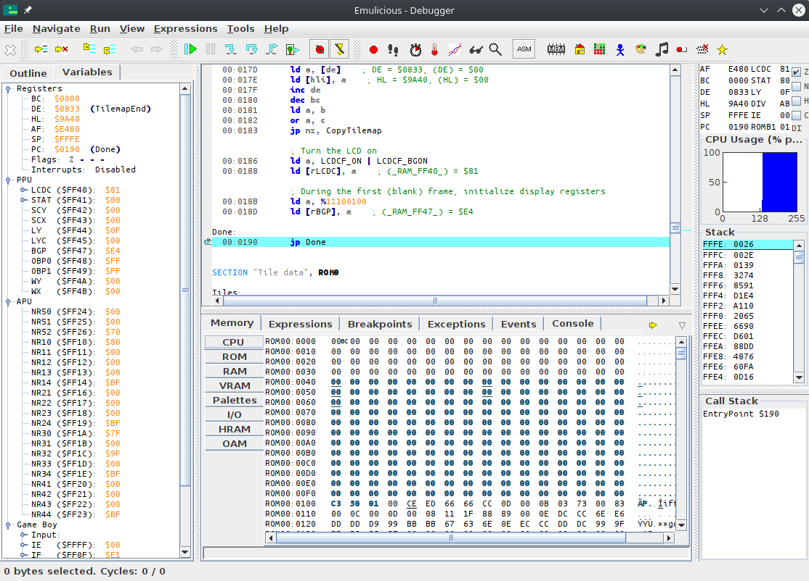
ℹ️
The instruction highlighted in blue is always what the CPU is about to execute, not what it just executed. Keep this in mind.
If we want to watch execution from the beginning, we need to reset the emulator. Go into the emulator’s “File” menu, and select “Reset”, or press Ctrl+Backspace.
The blue line should automatically move to address $01001, and now we’re ready to trace! All the commands for that are in the “Run” menu.
- “Resume” simply unpauses the emulator.
- “Step Into” and “Step Over” advance the emulator by one instruction.
They only really differ on the
callinstruction, interrupts, and when encountering a conditional jump, neither of which we are using here, so we will use “Step Into”. - The other options are not relevant for now.
We will have to “Step Into” a bunch of times, so it’s a good idea to use the key shortcut.
If we press F5 once, the jp EntryPoint is executed.
And if we press it a few more times, can see the instructions being executed, one by one!
Now, you may notice the WaitVBlank loop runs a lot of times, but what we are interested in is the CopyTiles loop.
We can easily skip over it in several ways; this time, we will use a breakpoint.
We will place the breakpoint on the ld de, Tiles at 00:0162; either double-click on that line, or select it and press Ctrl+Shift+B.
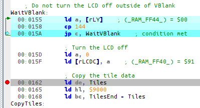
Then you can resume execution by pressing F8. Whenever Emulicious is running, and the (emulated) CPU is about to execute an instruction a breakpoint was placed on, it automatically pauses.
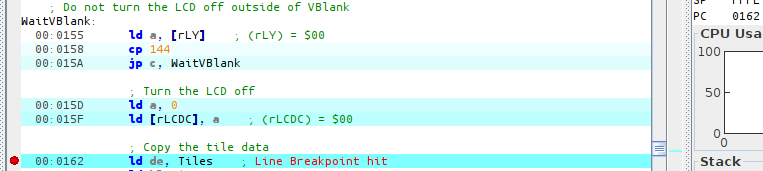
You can see where execution is being paused both from the green arrow and the value of PC.
If we trace the next three instructions, we can see the three arguments to the CopyTiles loop getting loaded into registers.
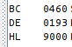
For fun, let’s watch the tiles as they’re being copied. For that, obviously, we will use the Memory Editor, and position it at the destination. As we can see from the image above, that would be $9000!
Click on “Memory” on the bottom window, then “VRAM”, and press Ctrl+G (for “Goto”).
Awesome, right?
What next?
Congrats, you have just learned how to use a debugger! We have only scratched the surface, though; we will use more of Emulicious’ tools to illustrate the next parts. Don’t worry, from here on, lessons will go with a lot more images—you’ve made it through the hardest part!
Why does execution start at $0100? That’s because it’s where the boot ROM hands off control to our game once it’s done.
Tiles
üí≠
“Tiles” were called differently in documentation of yore. They were usually called “patterns” or “characters”, the latter giving birth to the “CHR” abbreviation which is sometimes used to refer to tiles.
For example, on the NES, tile data is usually provided by the cartridge in either CHR ROM or CHR RAM. The term “CHR” is typically not used on the Game Boy, though exchanges between communities cause terms to “leak”, so some refer to the area of VRAM where tiles are stored as “CHR RAM” or “CHR VRAM”, for example.
As with all such jargon whose meaning may depend on who you are talking to, I will stick to “tiles” across this entire tutorial for consistency, being what is the most standard in the GB dev community now.
Well, copying this data blindly is fine and dandy, but why exactly is the data “graphics”?
Ah, yes, pixels.
Let’s see about that!
Helpful hand
Now, figuring out the format with an explanation alone is going to be very confusing; but fortunately, Emulicious got us covered thanks to its Tile Viewer. You can open it either by selecting “Tools” then “Tile Viewer”, or by clicking on the grid of colored tiles in the debugger’s toolbar.
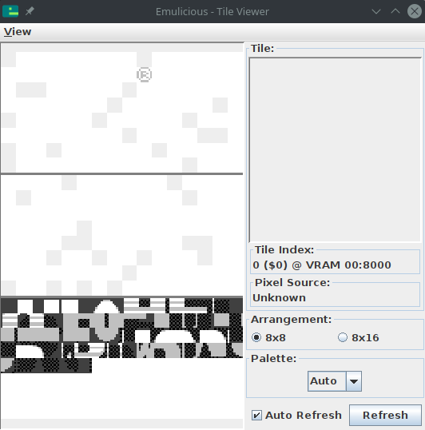
You can combine the various VRAM viewers by going to “View”, then “Combine Video Viewers”. We will come to the other viewers in due time. This one shows the tiles present in the Game Boy’s video memory (or “VRAM”).
ü§î
I encourage you to experiment with the VRAM viewer, hover over things, tick and untick checkboxes, see by yourself what’s what. Any questions you might have will be answered in due time, don’t worry! And if what you’re seeing later on doesn’t match my screenshots, ensure that the checkboxes match mine.
Don’t mind the “®” icon in the top-left; we did not put it there ourselves, and we will see why it’s there later.
Short primer
You may have heard of tiles before, especially as they were really popular in 8-bit and 16-bit systems. That’s no coincidence: tiles are very useful. Instead of storing every on-screen pixel (144 × 160 pixels × 2 bits/pixel = 46080 bits = 5760 bytes, compared to the console’s 8192 bytes of VRAM), pixels are grouped into tiles, and then tiles are assembled in various ways to produce the final image.
In particular, tiles can be reused very easily and at basically no cost, saving a lot of memory! In addition, manipulating whole tiles at once is much cheaper than manipulating the individual pixels, so this spares processing time as well.
The concept of a “tile” is very general, but on the Game Boy, tiles are always 8 by 8 pixels. Often, hardware tiles are grouped to manipulate them as larger tiles (often 16×16); to avoid the confusion, those are referred to as meta-tiles.
“bpp”?
You may be wondering where that “2 bits/pixel” figure earlier came from… This is something called “bit depth”.
See, colors are not stored in the tiles themselves! Instead, it works like a coloring book: the tile itself contains 8 by 8 indices, not colors; you give the hardware a tile and a set of colors—a palette—and it colorizes them! (This is also why color swaps were very common back then: you could create enemy variations by storing tiny palettes instead of large different graphics.)
Anyway, as it is, Game Boy palettes are 4 colors large.1 This means that the indices into those palettes, stored in the tiles, can be represented in only two bits! This is called “2 bits per pixel”, noted “2bpp”.
With that in mind, we are ready to explain how these bytes turn into pixels!
Encoding
As I explained, each pixel takes up 2 bits. Since there are 8 bits in a byte, you might expect each byte to contain 4 pixels… and you would be neither entirely right, nor entirely wrong. See, each row of 8 pixels is stored in 2 bytes, but neither of these bytes contains the info for 4 pixels. (Think of it like a 10 € banknote torn in half: neither half is worth anything, but the full bill is worth, well, 10 €.)
For each pixel, the least significant bit of its index is stored in the first byte, and the most significant bit is stored in the second byte. Since each byte is a collection of one of the bits for each pixel, it’s called a bitplane.
The leftmost pixel is stored in the leftmost bit of both bytes, the pixel to its right in the second leftmost bit, and so on. The first pair of bytes stores the topmost row, the second byte the row below that, and so on.
Here is a more visual demonstration:
This encoding may seem a little weird at first, and it can be; it’s made to be more convenient for the hardware to decode, keeping the circuitry simple and low-power. It even makes a few cool tricks possible, as we will see (much) later!
You can read up more about the encoding in the Pan Docs and ShantyTown’s site.
In the next lesson, we shall see how colors are applied!
Other consoles can have varying bit depths; for example, the SNES has 2bpp, 4bpp, and 8bpp depending on the graphics mode and a few other parameters.
Palettes
In the previous lesson, I briefly mentioned that colors are applied to tiles via palettes, but we haven’t talked much about those yet.
The black & white Game Boy has three palettes, one for the background called BGP (“BackGround Palette”), and two for the objects called OBP0 and OBP1 (“OBject Palette 0/1”).
If you are wondering what “objects” are, you will have to wait until Part Ⅱ to find out; for now, let’s focus on the background.
üåà
The Game Boy Color introduced, obviously, colors, and this was mainly done by reworking the way palettes are handled. We will not talk about Game Boy Color features in Part Ⅰ for the sake of simplicity, but we will do so in later parts.
If you chose to combine the video viewers in the previous chapter, the palette viewer should show up on the bottom right of the video viewer.
Otherwise, please select Emulicious’ “Tools” tab, then select Palette Viewer.
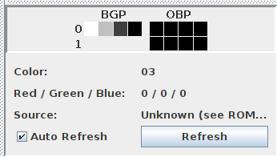
We will be taking a look at the “BGP” line. As I explained before, tiles store “color indices” for each pixel, which are used to index into the palette. Color number 01 is the leftmost in that line, and number 3 is the rightmost.
So, in our case, color number 0 is “white”, color number 1 is “light gray”, number 2 is “dark gray”, and number 3 “black”. I put air quotes because “black” isn’t true black, and “white” isn’t true white. Further, note that the original Game Boy had shades of green, but the later Game Boy Pocket’s screen produced shades of gray instead. And, even better, the Game Boy Color will automatically colorize games that lack Game Boy Color support!
All this to say, one shouldn’t expect specific colors out of a Game Boy game2, just four more or less bright colors.
Getting our hands dirty
Well, so far in this tutorial, besides running the Hello World, we have been pretty passive, watching it unfold. What do you say we start prodding the ROM a bit?
In Emulicious’ debugger, select the “Variables” tab on the left to show the IO registers.
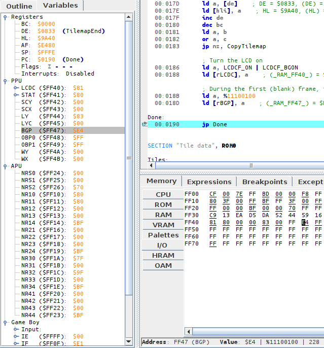
While the VRAM viewer offers a visual representation of the palette, the IO map shows the nitty-gritty: how it’s encoded. The IO map also lets us modify BGP easily; but to do so, we need to understand how values we write are turned into colors.
Encoding
Fortunately, the encoding is very simple. I will explain it, and at the same time, give an example with the palette we have at hand, $E4.
Take the byte, break its 8 bits into 4 groups of 2.
[BGP] = $E4
$E4 = %11100100 (refresh your memory in the "Binary and hexadecimal" lesson if needed!)
That gets broken down into %11, %10, %01, %00
Color number 0 is the rightmost “group”, color number 3 is the leftmost one. Simple! And this matches what the VRAM viewer is showing us: color number 0, the rightmost, is the brightest (%00), up to color number 3, the leftmost and the darkest (%11).
Lights out
For fun, let’s make the screen completely black.
We can easily do this by setting all colors in the palette to black (%11).
This would be %11 %11 %11 %11 = $FF.
In the “Variables” tab in the debugger, click on the byte to the right of BGP, erase the “E4”, type “FF”, and hit Enter. BGP immediately updates, turning the screen black!
What if we wanted to take the original palette, but invert it? %11 would become %00, %01 would become %10, %10 would become %01, and %00 would become %11. We would get thus:
%11_10_01_00
↓ ↓ ↓ ↓
%00_01_10_11
(I’m not giving the value in hexadecimal, use this as an opportunity to exercise your bin-to-hex conversions!)
If you go to the Tile Viewer and change “Palette” to “Gray”, you will notice that the tile data stays the same regardless of how the palette is modified! This is an advantage of using palettes: fading the screen in and out is very cheap, just modifying a single byte, instead of having to update every single on-screen pixel.
Got all that? Then let’s take a look at the last missing puzzle piece in the Hello World’s rendering process, the tilemap!
Numbering often starts at 0 when working with computers. We will understand why later, but for now, please bear with it!
Well, it is possible to detect these different models and account for them, but this would require taking plenty of corner cases into consideration, so it’s probably not worth the effort.
Tilemap
üßê
Some spell them “tile map”, some “tilemap”.
I will be using the latter by preference, but I also stay consistent with it in the code (Tilemap and not TileMap), as well as later when we will talk about attribute maps (“attrmap” and Attrmap instead of AttrMap).
We are almost there. We have seen how graphics on the Game Boy are composed of 8×8 “tiles”, and we have seen how color is added into the mix.
But we have not seen yet how those tiles are arranged into a final picture!
Tiles are basically a grid of pixels; well, the tilemaps are basically a grid of tiles! To allow for cheap reuse, tiles aren’t stored in the tilemap directly; instead, tiles are referred to by an ID, which you can see in Emulicious’ Tile Viewer.

Now, of course, tile IDs are numbers, like everything that computers deal with. IDs are stored in bytes, so there are 256 possible tile IDs. However, the astute reader will have noticed that there are 384 tiles in total1! By virtue of the pigeonhole principle, this means that some IDs refer to several tiles at the same time.
Indeed, Emulicious reports that the first 128 tiles have the same IDs as the last 128. There exists a mechanism to select whether IDs 0–127 reference the first or last 128 tiles, but for simplicity’s sake, we will overlook this for now, so please ignore the first (topmost) 128 tiles for the time being.
Now, please turn your attention to Emulicious’ Tilemap Viewer, pictured below.

You may notice that the image shown is larger than what is displayed on-screen. Only part of the tilemap, outlined by a thicker border in the Tilemap Viewer, is displayed on-screen at a given time. We will explain this in more detail in Part Ⅱ.
Here we will be able to see the power of tile reuse in full force. As a convenience and a refresher, here are the tiles our Hello World loads into VRAM:
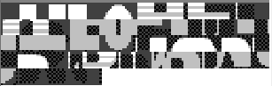
You can see that we only loaded a single “blank” tile ($00, the first aka. top-left one), but it can be repeated to cover the whole background at no extra cost!
Repetition can be more subtle: for example, tile $01 is used for the top-left corner of the H, E, L, L, and W (red lines below)! The R, L, and D also both share their top-left tile ($2D, blue lines below); and so on. You can confirm this by hovering over tiles in the BG map tab, which shows the ID of the tile at that position.

All in all, we can surmise that displaying graphics on the Game Boy consists of loading “patterns” (the tiles), and then telling the console which tile to display for each given location.
The even more astute (astuter?) reader will have noticed that 384 = 3 × 128. Thus, tiles are often conceptually grouped into three “blocks” of 128 tiles each, which Emulicious shows as separated by thicker horizontal lines.
Wrapping up
Congrats! You have made it through the first part of this tutorial. By this point, you have a basic enough understanding of the console that you know how to display a picture. And hey, that doesn’t sound like much, but consider everything you have seen so far—there is a lot that goes into it!
ü•≥
Honestly, congrats on coming this far—many people have given up earlier than this. So you can give yourself a pat on the back, you honestly deserve it! Now may also be a good time to take a break if you are reading all this in a single trait. I encourage you to give it a little time to sink in, and maybe go back to the lessons you struggled on the most. Maybe a second read can help.
And yes, you could simply have let a library handle all that. However, the details always leak through eventually, so knowing about them is helpful, if only for debugging.
Plus, understanding what’s really going on under the hood makes you a better programmer, even if you don’t end up using ASM in the long run. Amusingly, even modern systems work similarly to older ones in unexpected places, so some things you just learned will carry over! Trust me, everything you have learned and will learn is worth it! ✊
That said, right now, you may have a lot of questions.
- Why do we turn off the LCD?
- We know how to make a static picture, but how to we add motion into the mix?
- Also, how do I get input from the player?
- The code mentions shutting down audio, but how do I play some of those famed beeps and bloops?
- Writing graphics in that way sound tedious, is there no other way?
- Actually, wait, how do we make a game out of all this??
‚Ķ All of that answered, and more, in Part Ⅱ! üëÄ
Getting started
In this lesson, we will start a new project from scratch. We will make a Breakout / Arkanoid clone, which we’ll call “Unbricked”! (Though you are free to give it any other name you like, as it will be your project.)
Open a terminal and make a new directory (mkdir unbricked), and then enter it (cd unbricked), just like you did for “Hello, world!”.
Start by creating a file called main.asm, and include hardware.inc in your code.
INCLUDE "hardware.inc"
You may be wondering what purpose hardware.inc serves.
Well, the code we write only really affects the CPU, but does not do anything with the rest of the console (not directly, anyway).
To interact with other components (like the graphics system, say), Memory-Mapped I/O (MMIO) is used: basically, memory in a certain range (addresses $FF00–FF7F) does special things when accessed.
These bytes of memory being interfaces to the hardware, they are called hardware registers (not to be mistaken with the CPU registers).
For example, the “PPU status” register is located at address $FF41.
Reading from that address reports various bits of info regarding the graphics system, and writing to it allows changing some parameters.
But, having to remember all the numbers (non-exhaustive list) would be very tedious—and this is where hardware.inc comes into play!
hardware.inc defines one constant for each of these registers (for example, rSTAT for the aforementioned “PPU status” register), plus some additional constants for values read from or written to these registers.
Don’t worry if this flew over your head, we’ll see an example below with rLCDC and LCDCF_ON.
By the way, the r stands for “register”, and the F in LCDCF stands for “flag”.
Next, make room for the header. Remember from Part Ⅰ that the header is where some information that the Game Boy relies on is stored, so you don’t want to accidentally leave it out.
SECTION "Header", ROM0[$100]
jp EntryPoint
ds $150 - @, 0 ; Make room for the header
The header jumps to EntryPoint, so let’s write that now:
EntryPoint:
; Do not turn the LCD off outside of VBlank
WaitVBlank:
ld a, [rLY]
cp 144
jp c, WaitVBlank
; Turn the LCD off
ld a, 0
ld [rLCDC], a
The next few lines wait until “VBlank”, which is the only time you can safely turn off the screen (doing so at the wrong time could damage a real Game Boy, so this is very crucial). We’ll explain what VBlank is and talk about it more later in the tutorial.
Turning off the screen is important because loading new tiles while the screen is on is tricky—we’ll touch on how to do that in Part 3.
Speaking of tiles, we’re going to load some into VRAM next, using the following code:
; Copy the tile data
ld de, Tiles
ld hl, $9000
ld bc, TilesEnd - Tiles
CopyTiles:
ld a, [de]
ld [hli], a
inc de
dec bc
ld a, b
or a, c
jp nz, CopyTiles
This loop might be reminiscent of part Ⅰ.
It copies starting at Tiles to $9000 onwards, which is the part of VRAM where our tiles are going to be stored.
Recall that $9000 is where the data of background tile $00 lies, and the data of subsequent tiles follows right after.
To get the number of bytes to copy, we will do just like in Part Ⅰ: using another label at the end, called TilesEnd, the difference between it (= the address after the last byte of tile data) and Tiles (= the address of the first byte) will be exactly that length.
That said, we haven’t written Tiles nor any of the related data yet.
We’ll get to that later!
Almost done now—next, write another loop, this time for copying the tilemap.
; Copy the tilemap
ld de, Tilemap
ld hl, $9800
ld bc, TilemapEnd - Tilemap
CopyTilemap:
ld a, [de]
ld [hli], a
inc de
dec bc
ld a, b
or a, c
jp nz, CopyTilemap
Note that while this loop’s body is exactly the same as CopyTiles’s, the 3 values loaded into de, hl, and bc are different.
These determine the source, destination, and size of the copy, respectively.
:::tip “DRY”
If you think that this is super redundant, you are not wrong, and we will see later how to write actual, reusable functions. But there is more to them than meets the eye, so we will start tackling them much later.
:::
Finally, let’s turn the screen back on, and set a background palette.
Rather than writing the non-descript number %10000001 (or $81 or 129, to taste), we make use of two constants graciously provided by hardware.inc: LCDCF_ON and LCDCF_BGON.
When written to rLCDC, the former causes the PPU and screen to turn back on, and the latter enables the background to be drawn.
(There are other elements that could be drawn, but we are not enabling them yet.)
Combining these constants must be done using |, the binary “or” operator; we’ll see why later.
; Turn the LCD on
ld a, LCDCF_ON | LCDCF_BGON
ld [rLCDC], a
; During the first (blank) frame, initialize display registers
ld a, %11100100
ld [rBGP], a
Done:
jp Done
There’s one last thing we need before we can build the ROM, and that’s the graphics. We will draw the following screen:

In hello-world.asm, tile data had been written out by hand in hexadecimal; this was to let you see how the sausage is made at the lowest level, but boy is it impractical to write!
This time, we will employ a more friendly way, which will let us write each row of pixels more easily.
For each row of pixels, instead of writing the bitplanes directly, we will use a backtick (```) followed by 8 characters.
Each character defines a single pixel, intuitively from left to right; it must be one of 0, 1, 2, and 3, representing the corresponding color index in the palette.
If the character selection isn’t to your liking, you can use RGBASM’s -g option or OPT g to pick others.
For example, rgbasm -g '.xXO' (...) or OPT g.xXO would swap the four characters to ., x, X, and O respectively.
For example:
dw `01230123 ; This is equivalent to `db $55,$33`
You may have noticed that we are using dw instead of db; the difference between these two will be explained later.
We already have tiles made for this project, so you can copy this premade file, and paste it at the end of your code.
Then copy the tilemap from this file, and paste it after the TilesEnd label.
You can build the ROM now, by running the following commands in your terminal:
rgbasm -L -o main.o main.asm
rgblink -o unbricked.gb main.o
rgbfix -v -p 0xFF unbricked.gb
If you run this in your emulator, you should see the following:

That white square seems to be missing! You may have noticed this comment earlier, somewhere in the tile data:
dw `22322232
dw `23232323
dw `33333333
; Paste your logo here:
TilesEnd:
The logo tiles were left intentionally blank so that you can choose your own. You can use one of the following pre-made logos, or try coming up with your own!


Add your chosen logo’s data (click one of the “Source” links above) after the comment, build the game again, and you should see your logo of choice in the bottom-right!
Objects
The background is very useful when the whole screen should move at once, but this is not ideal for everything. For example, a cursor in a menu, NPCs and the player in a RPG, bullets in a shmup, or balls in an Arkanoid clone… all need to move independently of the background. Thankfully, the Game Boy has a feature that’s perfect for these! In this lesson, we will talk about objects (sometimes called “OBJ”).
The above description may have made you think of the term “sprite” instead of “object”. The term “sprite” has a lot of meanings depending on context, so, to avoid confusion, this tutorial tries to use specific alternatives instead, such as object, metasprite, actor, etc.
Each object allows drawing one or two tiles (so 8×8 or 8×16 pixels, respectively) at any on-screen position—unlike the background, where all the tiles are drawn in a grid. Therefore, an object consists of its on-screen position, a tile ID (like with the tilemap), and some extra properties called “attributes”. These extra properties allow, for example, to display the tile flipped. We’ll see more about them later.
Just like how the tilemap is stored in VRAM, objects live in a region of memory called OAM, meaning Object Attribute Memory. Recall from above that an object consists of:
- Its on-screen position
- A tile ID
- The “attributes”
These are stored in 4 bytes: one for the Y coordinate, one for the X coordinate, one for the tile ID, and one for the attributes. OAM is 160 bytes long, and since 160 ∕ 4 = 40, the Game Boy stores a total of 40 objects at any given time.
There is a catch, though: an object’s Y and X coordinate bytes in OAM do not store its on-screen position! Instead, the on-screen X position is the stored X position minus 8, and the on-screen Y position is the stored Y position minus 16. To stop displaying an object, we can simply put it off-screen, e.g. by setting its Y position to 0.
These offsets are not arbitrary! Consider an object’s maximum size: 8 by 16 pixels. These offsets allow objects to be clipped by the left and top edges of the screen. The NES, for example, lacks such offsets, so you will notice that objects always disappear after hitting the left or top edge of the screen.
Let’s discover objects by experimenting with them!
First off, when the Game Boy is powered on, OAM is filled with a bunch of semi-random values, which may cover the screen with some random garbage.
Let’s fix that by first clearing OAM before enabling objects for the first time.
Let’s add the following just after the CopyTilemap loop:
ld a, 0
ld b, 160
ld hl, _OAMRAM
ClearOam:
ld [hli], a
dec b
jp nz, ClearOam
This is a good time to do that, since just like VRAM, the screen must be off to safely access OAM.
Once OAM is clear, we can draw an object by writing its properties.
ld hl, _OAMRAM
ld a, 128 + 16
ld [hli], a
ld a, 16 + 8
ld [hli], a
ld a, 0
ld [hli], a
ld [hl], a
Remember that each object in OAM is 4 bytes, in the order Y, X, Tile ID, Attributes. So, the object’s top-left pixel lies 128 pixels from the top of the screen, and 16 from its left. The tile ID and attributes are both set to 0.
You may remember from the previous lesson that we’re already using tile ID 0, as it’s the start of our background’s graphics. However, by default objects and backgrounds use a different set of tiles, at least for the first 128 IDs. Tiles with IDs 128–255 are shared by both, which is useful if you have a tile that’s used both on the background and by an object.
If you go to “Tools”, then “Tile Viewer” in Emulicious’ debugger, you should see three distinct sections.
Because we need to load this to a different area, we’ll use the address $8000 and load a graphic for our game’s paddle.
Let’s do so right after CopyTilemap:
; Copy the tile data
ld de, Paddle
ld hl, $8000
ld bc, PaddleEnd - Paddle
CopyPaddle:
ld a, [de]
ld [hli], a
inc de
dec bc
ld a, b
or a, c
jp nz, CopyPaddle
And don’t forget to add Paddle to the bottom of your code.
Paddle:
dw `13333331
dw `30000003
dw `13333331
dw `00000000
dw `00000000
dw `00000000
dw `00000000
dw `00000000
PaddleEnd:
Finally, let’s enable objects and see the result.
Objects must be enabled by the familiar rLCDC register, otherwise they just don’t show up.
(This is why we didn’t have to clear OAM in the previous lessons.)
We will also need to initialize one of the object palettes, rOBP0.
There are actually two object palettes, but we’re only going to use one.
; Turn the LCD on
ld a, LCDCF_ON | LCDCF_BGON | LCDCF_OBJON
ld [rLCDC], a
; During the first (blank) frame, initialize display registers
ld a, %11100100
ld [rBGP], a
ld a, %11100100
ld [rOBP0], a
Movement
Now that you have an object on the screen, let’s move it around.
Previously, the Done loop did nothing; let’s rename it to Main and use it to move our object.
We’re going to wait for VBlank before changing OAM, just like we did before turning off the screen.
Main:
; Wait until it's *not* VBlank
ld a, [rLY]
cp 144
jp nc, Main
WaitVBlank2:
ld a, [rLY]
cp 144
jp c, WaitVBlank2
; Move the paddle one pixel to the right.
ld a, [_OAMRAM + 1]
inc a
ld [_OAMRAM + 1], a
jp Main
ü§®
Here, we are accessing OAM without turning the LCD off, but it’s still safe. Explaining why requires a more thorough explanation of the Game Boy’s rendering, so let’s ignore it for now.
Now you should see the paddle moving… very quickly. Because it moves by a pixel every frame, it’s going at a speed of 60 pixels per second! To slow this down, we’ll use a variable.
So far, we have only worked with the CPU registers, but you can create global variables too!
To do this, let’s create another section, but putting it in WRAM0 instead of ROM0.
Unlike ROM (“Read-Only Memory”), RAM (“Random-Access Memory”) can be written to; thus, WRAM, or Work RAM, is where we can store our game’s variables.
Add this to the bottom of your file:
SECTION "Counter", WRAM0
wFrameCounter: db
Now we’ll use the wFrameCounter variable to count how many frames have passed since we last moved the paddle.
Every 15th frame, we’ll move the paddle by one pixel, slowing it down to 4 pixels per second.
Don’t forget that RAM is filled with garbage values when the Game Boy starts, so we need to initialize our variables before first using them.
ld a, 0
ld [wFrameCounter], a
Main:
ld a, [rLY]
cp 144
jp nc, Main
WaitVBlank2:
ld a, [rLY]
cp 144
jp c, WaitVBlank2
ld a, [wFrameCounter]
inc a
ld [wFrameCounter], a
cp a, 15 ; Every 15 frames (a quarter of a second), run the following code
jp nz, Main
; Reset the frame counter back to 0
ld a, 0
ld [wFrameCounter], a
; Move the paddle one pixel to the right.
ld a, [_OAMRAM + 1]
inc a
ld [_OAMRAM + 1], a
jp Main
Alright! Up next is us taking control of that little paddle.
Functions
So far, we have only written a single “flow” of code, but we can already spot some snippets that look redundant. Let’s use functions to “factor out” code!
For example, in three places, we are copying chunks of memory around.
Let’s write a function below the jp Main, and let’s call it Memcpy, like the similar C function:
; Copy bytes from one area to another.
; @param de: Source
; @param hl: Destination
; @param bc: Length
Memcopy:
ld a, [de]
ld [hli], a
inc de
dec bc
ld a, b
or a, c
jp nz, Memcopy
ret
The new ret instruction should immediately catch our eye.
It is, unsurprisingly, what makes execution return to where the function was called from.
Importantly, many languages have a definite “end” to a function: in C or Rust, that’s the closing brace }; in Pascal or Lua, the keyword end, and so on; the function implicitly returns when execution reaches its end.
However, this is not the case in assembly, so you must remember to add a ret instruction at the end of the function to return from it!
Otherwise, the results are unpredictable.
Notice the comment above the function, explaining which registers it takes as input. This comment is important so that you know how to interface with the function; assembly has no formal parameters, so comments explaining them are even more important than with other languages. We’ll see more of those as we progress.
There are three places in the initialization code where we can use the Memcpy function.
Find each of these copy loops and replace them with a call to Memcpy; for this, we use the call instruction.
The registers serve as parameters to the function, so we’ll leave them as-is.
| Before | After |
|---|---|
|
|
|
|
|
|
In the next chapter, we’ll write another function, this time to read player input.
Input
We have the building blocks of a game here, but we’re still lacking player input. A game that plays itself isn’t very much fun, so let’s fix that.
Paste this code below your Main loop.
Like Memcpy, this is a function that can be reused from different places, using the call instruction.
UpdateKeys:
; Poll half the controller
ld a, P1F_GET_BTN
call .onenibble
ld b, a ; B7-4 = 1; B3-0 = unpressed buttons
; Poll the other half
ld a, P1F_GET_DPAD
call .onenibble
swap a ; A3-0 = unpressed directions; A7-4 = 1
xor a, b ; A = pressed buttons + directions
ld b, a ; B = pressed buttons + directions
; And release the controller
ld a, P1F_GET_NONE
ldh [rP1], a
; Combine with previous wCurKeys to make wNewKeys
ld a, [wCurKeys]
xor a, b ; A = keys that changed state
and a, b ; A = keys that changed to pressed
ld [wNewKeys], a
ld a, b
ld [wCurKeys], a
ret
.onenibble
ldh [rP1], a ; switch the key matrix
call .knownret ; burn 10 cycles calling a known ret
ldh a, [rP1] ; ignore value while waiting for the key matrix to settle
ldh a, [rP1]
ldh a, [rP1] ; this read counts
or a, $F0 ; A7-4 = 1; A3-0 = unpressed keys
.knownret
ret
Unfortunately, reading input on the Game Boy is fairly involved (as you can see!), and it would be quite difficult to explain what this function does right now. So, I ask that you make an exception, and trust me that this function does read input. Alright? Good!
Now that we know how to use functions, let’s call the UpdateKeys function in our main loop to read user input.
UpdateKeys writes the held buttons to a location in memory that we called wCurKeys, which we can read from after the function returns.
Because of this, we only need to call UpdateKeys once per frame.
This is important, because not only is it faster to reload the inputs that we’ve already processed, but it also means that we will always act on the same inputs, even if the player presses or releases a button mid-frame.
First, let’s set aside some room for the two variables that UpdateKeys will use; paste this at the end of the main.asm:
SECTION "Input Variables", WRAM0
wCurKeys: db
wNewKeys: db
Each variable must reside in RAM, and not ROM, because ROM is “Read-Only” (so you can’t modify it).
Additionally, each variable only needs to be one byte large, so we use db (“Define Byte”) to reserve one byte of RAM for each.
We’re going to use the and opcode, which we can use to set the zero flag (z) to the value of the bit.
We can use this along with the PADF constants in hardware.inc to read a particular key.
Main:
ld a, [rLY]
cp 144
jp nc, Main
WaitVBlank2:
ld a, [rLY]
cp 144
jp c, WaitVBlank2
; Check the current keys every frame and move left or right.
call UpdateKeys
; First, check if the left button is pressed.
CheckLeft:
ld a, [wCurKeys]
and a, PADF_LEFT
jp z, CheckRight
Left:
; Move the paddle one pixel to the left.
ld a, [_OAMRAM + 1]
dec a
; If we've already hit the edge of the playfield, don't move.
cp a, 15
jp z, Main
ld [_OAMRAM + 1], a
jp Main
; Then check the right button.
CheckRight:
ld a, [wCurKeys]
and a, PADF_RIGHT
jp z, Main
Right:
; Move the paddle one pixel to the right.
ld a, [_OAMRAM + 1]
inc a
; If we've already hit the edge of the playfield, don't move.
cp a, 105
jp z, Main
ld [_OAMRAM + 1], a
jp Main
Now, if you compile the project, you should be able to move the paddle left and right using the d-pad!! Hooray, we have the beginnings of a game!
Collision
Being able to move around is great, but there’s still one object we need for this game: a ball! Just like with the paddle, the first step is to create a tile for the ball and load it into VRAM.
Graphics
Add this to the bottom of your file along with the other graphics:
Ball:
dw `00033000
dw `00322300
dw `03222230
dw `03222230
dw `00322300
dw `00033000
dw `00000000
dw `00000000
BallEnd:
Now copy it to VRAM somewhere in your initialization code, e.g. after copying the paddle’s tile.
; Copy the ball tile
ld de, Ball
ld hl, $8010
ld bc, BallEnd - Ball
call Memcopy
In addition, we need to initialize an entry in OAM, following the code that initializes the paddle.
; Initialize the paddle sprite in OAM
ld hl, _OAMRAM
ld a, 128 + 16
ld [hli], a
ld a, 16 + 8
ld [hli], a
ld a, 0
ld [hli], a
ld [hli], a
; Now initialize the ball sprite
ld a, 100 + 16
ld [hli], a
ld a, 32 + 8
ld [hli], a
ld a, 1
ld [hli], a
ld a, 0
ld [hli], a
As the ball bounces around the screen its momentum will change, sending it in different directions.
Let’s create two new variables to track the ball’s momentum in each axis: wBallMomentumX and wBallMomentumY.
SECTION "Counter", WRAM0
wFrameCounter: db
SECTION "Input Variables", WRAM0
wCurKeys: db
wNewKeys: db
SECTION "Ball Data", WRAM0
wBallMomentumX: db
wBallMomentumY: db
We will need to initialize these before entering the game loop, so let’s do so right after we write the ball to OAM. By setting the X momentum to 1, and the Y momentum to -1, the ball will start out by going up and to the right.
; Now initialize the ball sprite
ld a, 100 + 16
ld [hli], a
ld a, 32 + 8
ld [hli], a
ld a, 1
ld [hli], a
ld a, 0
ld [hli], a
; The ball starts out going up and to the right
ld a, 1
ld [wBallMomentumX], a
ld a, -1
ld [wBallMomentumY], a
Prep work
Now for the fun part!
Add a bit of code at the beginning of your main loop that adds the momentum to the OAM positions.
Notice that since this is the second OAM entry, we use + 4 for Y and + 5 for X.
This can get pretty confusing, but luckily we only have two objects to keep track of.
In the future, we’ll go over a much easier way to use OAM.
Main:
ld a, [rLY]
cp 144
jp nc, Main
WaitVBlank2:
ld a, [rLY]
cp 144
jp c, WaitVBlank2
; Add the ball's momentum to its position in OAM.
ld a, [wBallMomentumX]
ld b, a
ld a, [_OAMRAM + 5]
add a, b
ld [_OAMRAM + 5], a
ld a, [wBallMomentumY]
ld b, a
ld a, [_OAMRAM + 4]
add a, b
ld [_OAMRAM + 4], a
You might want to compile your game again to see what this does. If you do, you should see the ball moving around, but it will just go through the walls and then fly offscreen.
To fix this, we need to add collision detection so that the ball can bounce around. We’ll need to repeat the collision check a few times, so we’re going to make use of two functions to do this.
Please do not get stuck on the details of this next function, as it uses some techniques and instructions we haven’t discussed yet. The basic idea is that it converts the position of the sprite to a location on the tilemap. This way, we can check which tile our ball is touching so that we know when to bounce!
; Convert a pixel position to a tilemap address
; hl = $9800 + X + Y * 32
; @param b: X
; @param c: Y
; @return hl: tile address
GetTileByPixel:
; First, we need to divide by 8 to convert a pixel position to a tile position.
; After this we want to multiply the Y position by 32.
; These operations effectively cancel out so we only need to mask the Y value.
ld a, c
and a, %11111000
ld l, a
ld h, 0
; Now we have the position * 8 in hl
add hl, hl ; position * 16
add hl, hl ; position * 32
; Convert the X position to an offset.
ld a, b
srl a ; a / 2
srl a ; a / 4
srl a ; a / 8
; Add the two offsets together.
add a, l
ld l, a
adc a, h
sub a, l
ld h, a
; Add the offset to the tilemap's base address, and we are done!
ld bc, $9800
add hl, bc
ret
The next function is called IsWallTile, and it’s going to contain a list of tiles which the ball can bounce off of.
; @param a: tile ID
; @return z: set if a is a wall.
IsWallTile:
cp a, $00
ret z
cp a, $01
ret z
cp a, $02
ret z
cp a, $04
ret z
cp a, $05
ret z
cp a, $06
ret z
cp a, $07
ret
This function might look a bit strange at first.
Instead of returning its result in a register, like a, it returns it in a flag: Z!
If at any point a tile matches, the function has found a wall and exits with Z set.
If the target tile ID (in a) matches one of the wall tile IDs, the corresponding cp will leave Z set; if so, we return immediately (via ret z), with Z set.
But if we reach the last comparison and it still doesn’t set Z, then we will know that we haven’t hit a wall and don’t need to bounce.
Putting it together
Time to use these new functions to add collision detection! Add the following after the code that updates the ball’s position:
BounceOnTop:
; Remember to offset the OAM position!
; (8, 16) in OAM coordinates is (0, 0) on the screen.
ld a, [_OAMRAM + 4]
sub a, 16 + 1
ld c, a
ld a, [_OAMRAM + 5]
sub a, 8
ld b, a
call GetTileByPixel ; Returns tile address in hl
ld a, [hl]
call IsWallTile
jp nz, BounceOnRight
ld a, 1
ld [wBallMomentumY], a
You’ll see that when we load the sprite’s positions, we subtract from them before calling GetTileByPixel.
You might remember from the last chapter that OAM positions are slightly offset; that is, (0, 0) in OAM is actually completely offscreen.
These sub instructions undo this offset.
However, there’s a bit more to this: you might have noticed that we subtracted an extra pixel from the Y position. That’s because (as the label suggests), this code is checking for a tile above the ball. We actually need to check all four sides of the ball so we know how to change the momentum according to which side collided, so… let’s add the rest!
BounceOnRight:
ld a, [_OAMRAM + 4]
sub a, 16
ld c, a
ld a, [_OAMRAM + 5]
sub a, 8 - 1
ld b, a
call GetTileByPixel
ld a, [hl]
call IsWallTile
jp nz, BounceOnLeft
ld a, -1
ld [wBallMomentumX], a
BounceOnLeft:
ld a, [_OAMRAM + 4]
sub a, 16
ld c, a
ld a, [_OAMRAM + 5]
sub a, 8 + 1
ld b, a
call GetTileByPixel
ld a, [hl]
call IsWallTile
jp nz, BounceOnBottom
ld a, 1
ld [wBallMomentumX], a
BounceOnBottom:
ld a, [_OAMRAM + 4]
sub a, 16 - 1
ld c, a
ld a, [_OAMRAM + 5]
sub a, 8
ld b, a
call GetTileByPixel
ld a, [hl]
call IsWallTile
jp nz, BounceDone
ld a, -1
ld [wBallMomentumY], a
BounceDone:
That was a lot, but now the ball bounces around your screen! There’s just one last thing to do before this chapter is over, and thats ball-to-paddle collision.
Paddle bounce
Unlike with the tilemap, there’s no position conversions to do here, just straight comparisons.
However, for these, we will need the carry flag.
The carry flag is notated as C, like how the zero flag is notated as Z, but don’t confuse it with the c register!
A refresher on comparisons
Just like Z, you can use the carry flag to jump conditionally.
However, while Z is used to check if two numbers are equal, C can be used to check if a number is greater than or smaller than another one.
For example, cp a, b sets C if a < b, and clears it if a >= b.
(If you want to check a <= b or a > b, you can use Z and C in tandem with two jp instructions.)
Armed with this knowledge, let’s work through the paddle bounce code:
; First, check if the ball is low enough to bounce off the paddle.
ld a, [_OAMRAM]
ld b, a
ld a, [_OAMRAM + 4]
cp a, b
jp nz, PaddleBounceDone ; If the ball isn't at the same Y position as the paddle, it can't bounce.
; Now let's compare the X positions of the objects to see if they're touching.
ld a, [_OAMRAM + 5] ; Ball's X position.
ld b, a
ld a, [_OAMRAM + 1] ; Paddle's X position.
sub a, 8
cp a, b
jp nc, PaddleBounceDone
add a, 8 + 16 ; 8 to undo, 16 as the width.
cp a, b
jp c, PaddleBounceDone
ld a, -1
ld [wBallMomentumY], a
PaddleBounceDone:
The Y position’s check is simple, since our paddle is flat. However, the X position has two checks which widen the area the ball can bounce on. First we add 16 to the ball’s position; if the ball is more than 16 pixels to the right of the paddle, it shouldn’t bounce. Then we undo this by subtracting 16, and while we’re at it, subtract another 8 pixels; if the ball is more than 8 pixels to the left of the paddle, it shouldn’t bounce.
Paddle width
You might be wondering why we checked 16 pixels to the right but only 8 pixels to the left. Remember that OAM positions represent the upper-left corner of a sprite, so the center of our paddle is actually 4 pixels to the right of the position in OAM. When you consider this, we’re actually checking 12 pixels out on either side from the center of the paddle.
12 pixels might seem like a lot, but it gives some tolerance to the player in case their positioning is off. If you’d prefer to make this easier or more difficult, feel free to adjust the values!
BONUS: tweaking the bounce height
You might notice that the ball seems to “sink” into the paddle a bit before bouncing. This is because the ball bounces when its top row of pixels aligns with the paddle’s top row (see the image above). If you want, try to adjust this so that the ball bounces when its bottom row of pixels touches the paddle’s top.
Hint: you can do this with just a single instruction!
Answer:
ld a, [_OAMRAM]
ld b, a
ld a, [_OAMRAM + 4]
+ add a, 6
cp a, b
Alternatively, you can add sub a, 6 just after ld a, [_OAMRAM].
In both cases, try playing with that 6 value; see what feels right!
Bricks
Up until this point our ball hasn’t done anything but bounce around, but now we’re going to make it destroy the bricks.
Before we start, let’s go over a new concept: constants.
We’ve already used some constants, like rLCDC from hardware.inc, but we can also create our own for anything we want.
Let’s make three constants at the top of our file, representing the tile IDs of left bricks, right bricks, and blank tiles.
INCLUDE "hardware.inc"
DEF BRICK_LEFT EQU $05
DEF BRICK_RIGHT EQU $06
DEF BLANK_TILE EQU $08
Constants are a kind of symbol (which is to say, “a thing with a name”).
Writing a constant’s name in an expression is equivalent to writing the number the constant is equal to, so ld a, BRICK_LEFT is the same as ld a, $05.
But I think we can all agree that the former is much clearer, right?
Destroying bricks
Now we’ll write a function that checks for and destroys bricks.
Our bricks are two tiles wide, so when we hit one we’ll have to remove the adjacent tile as well.
If we hit the left side of a brick (represented by BRICK_LEFT), we need to remove it and the tile to its right (which should be the right side).
If we instead hit the right side, we need to remove the left!
; Checks if a brick was collided with and breaks it if possible.
; @param hl: address of tile.
CheckAndHandleBrick:
ld a, [hl]
cp a, BRICK_LEFT
jr nz, CheckAndHandleBrickRight
; Break a brick from the left side.
ld [hl], BLANK_TILE
inc hl
ld [hl], BLANK_TILE
CheckAndHandleBrickRight:
cp a, BRICK_RIGHT
ret nz
; Break a brick from the right side.
ld [hl], BLANK_TILE
dec hl
ld [hl], BLANK_TILE
ret
Just insert this function into each of your bounce checks now. Make sure you don’t miss any! It should go right before the momentum is modified.
BounceOnTop:
; Remember to offset the OAM position!
; (8, 16) in OAM coordinates is (0, 0) on the screen.
ld a, [_OAMRAM + 4]
sub a, 16 + 1
ld c, a
ld a, [_OAMRAM + 5]
sub a, 8
ld b, a
call GetTileByPixel ; Returns tile address in hl
ld a, [hl]
call IsWallTile
jp nz, BounceOnRight
+ call CheckAndHandleBrick
ld a, 1
ld [wBallMomentumY], a
BounceOnRight:
ld a, [_OAMRAM + 4]
sub a, 16
ld c, a
ld a, [_OAMRAM + 5]
sub a, 8 - 1
ld b, a
call GetTileByPixel
ld a, [hl]
call IsWallTile
jp nz, BounceOnLeft
+ call CheckAndHandleBrick
ld a, -1
ld [wBallMomentumX], a
BounceOnLeft:
ld a, [_OAMRAM + 4]
sub a, 16
ld c, a
ld a, [_OAMRAM + 5]
sub a, 8 + 1
ld b, a
call GetTileByPixel
ld a, [hl]
call IsWallTile
jp nz, BounceOnBottom
+ call CheckAndHandleBrick
ld a, 1
ld [wBallMomentumX], a
BounceOnBottom:
ld a, [_OAMRAM + 4]
sub a, 16 - 1
ld c, a
ld a, [_OAMRAM + 5]
sub a, 8
ld b, a
call GetTileByPixel
ld a, [hl]
call IsWallTile
jp nz, BounceDone
+ call CheckAndHandleBrick
ld a, -1
ld [wBallMomentumY], a
BounceDone:
That’s it! Pretty simple, right?
Work in progress
üöß üöß üöß üöß üöß üöß üöß
As explained in the initial tutorial presentation, Part Ⅱ consists of us building an Arkanoid game. However, this is not finished yet; lessons are uploaded as they are made, so the tutorial just abruptly stops at some point. Sorry!
Please hold tight while we are working on this, follow us on Twitter for updates, and go to the next page to find out what you can do in the meantime!
Thank you for your patience üòä and see you around on GBDev!
Introducing Galactic Armada

This guide will help you create a classic shoot-em-up in RGBDS. This guide builds on knowledge from the previous tutorials, so some basic (or previously explained) concepts will not be explained.
You can find the full source code for this tutorial here.
Feature set
Here’s a list of features that will be included in the final product.
- Vertical Scrolling Background
- Basic HUD (via Window) & Score
- 4-Directional Player Movement
- Enemies
- Bullets
- Enemy/Bullet Collision
- Enemy/Player Collision
- Smooth Movement via Scaled Integers - Instead of using counters, smoother motion can be achieved using 16-bit (scaled) integers.
- Multiple Game States: Title Screen, Gameplay, Story State
- STAT Interrupts - used to properly draw the HUD at the top of gameplay.
- RGBGFX & INCBIN
- Writing Text
Download the Starter
This tutorial builds upon a “starter”. You can find that starter here.
To get started, download the zip file for this tutorial. You can find it on Github here. This file contains everything you need to get started.
- Dependent Libraries are included
- Graphics assets are present and organized
- The makefile is set to compile all changes
- A basic entry point & Game Loop has been setup for you.
- Some helpful utilities have already been included.
Note: Utilties that are more complicated will be explained on the utilities page.
This section is going to explain how the Galactic Armada project is structured. This includes the folders, resources, tools, entry point, and compilation process.
Note: All of this has been done and is a part of the template you can find here. These explanations are for understanding purposes, you don’t need to do anything yet.
Project Structure
For organizational purposes, many parts of the logic are separated into reusable functions. This is to reduce duplicate code, and make logic more clear.
Here’s a basic look at how the project is structured:
::: tip
Generated files should never be included in VCS repositories. It unneccessarily bloats the repo. The folders below marked with * contains assets generated from running the Makefile and are not included in the repository.
:::
libs- Two assembly files for input and sprites are located here.srcgenerated- the results of RGBGFX are stored here. *resources- Here exist some PNGs and Aseprite files for usage with RGBGFXmain- All assembly files are located here, or in subfoldersstatesgameplay- for gameplay related filesobjects- for gameplay objects like the player, bullets, and enemies- collision - for collision among objects
story- for our story state’s related filestitle-screen- for our title screen’s related files
utils- Extra functions includes to assist with developmentmacros
dist- The final ROM file will be created here. *obj- Intermediate files from the compile process. *Makefile- used to create the final ROM file and intermediate files
At the root of the project’s github repository, you’ll notice only 2 folders (src, and lib) and 1 file (the makefile). Locally, if you run the makefile, you’ll see the dist and obj folders will be generated.
Dependent Libraries
This project uses 2 additional libraries.
- Eievui’s Sprite Object Library
- The joypad input handler from the previous tutorial
Eievui’s sprite object library
For Eievui’s sprite object library, we have already initialized it at the start of the game:
Inside the ‘EntryPoint’ function in “GalacticArmada.asm”
; from: https://github.com/eievui5/gb-sprobj-lib
; The library is relatively simple to get set up. First, put the following in your initialization code:
; Initilize Sprite Object Library.
call InitSprObjLibWrapper
Once Initialized, we must reset it at the start of your game loop. This is done using the ResetShadowOAM function. Later, we must call it’s hOAMDMA function at the end of the game loop (during the vertical blank phase).
Inside the ‘GalacticArmadaGameLoop’ function in “GalacticArmada.asm”
; then put a call to ResetShadowOAM at the beginning of your main loop.
call ResetShadowOAM
; Our core game loop will go here
call WaitForVBlankStart
; from: https://github.com/eievui5/gb-sprobj-lib
; Finally, run the following code during VBlank:
ld a, HIGH(wShadowOAM)
call hOAMDMA
Joypad Input
For joypad input, we’ve already setup 2 variables in working ram: wCurKeys and wNewKeys.
At the top of our “GalacticArmada.asm” file
SECTION "GameVariables", WRAM0
wCurKeys:: db
wNewKeys:: db
wLastKeys:: db
Besides that, the final touch is calling the Input function at the start of the game loop:
GalacticArmadaGameLoop:
; This is in input.asm
; It's straight from: https://gbdev.io/gb-asm-tutorial/part2/input.html
; In their words (paraphrased): reading player input for gameboy is NOT a trivial task
; So it's best to use some tested code
call Input
; ... the rest of the game loop
That covers everything about our library implementations. Next we’ll explain the folder structure, graphical assets, and compilation process.
Sprites & Backgrounds
Drawing backgrounds and populating VRAM with tile data has already been covered in the previous tutorials. To make the code more organized and readable, the code for sprites and backgrounds will already be completed in the starter.
The following backgrounds and sprites are used in Galactic Armada:
- Backgrounds - Github Link
- Star Field
- Title Screen
- Text Font (Tiles only)
- Sprites - Github Link
- Enemy Ship
- Player Ship
- Bullet
These images were originally created in Aseprite. The original templates are also included in the repository.
The Backgrounds
We have 2 full backgrounds. Our Title Screen, and the Star Field for gameplay.

For these 2 backgrounds, we need to use some VRAM space for our text font. This text font will be at the beginning and occupy 52 tiles. For this reason, tilemaps we use later need their values to be offset by 52. That’s why you’ll see CopyDEintoMemoryAtHL_With52Offset used instead of just CopyDEintoMemoryAtHL.
Note: We’ll cover the text-font.png in the Drawing Text section.
*Inside of “src/main/assets/backgrounds.asm”
; ANCHOR: draw-title-screen
SECTION "BackgroundsAssets", ROM0
titleScreenTileData: INCBIN "src/generated/backgrounds/title-screen.2bpp"
titleScreenTileDataEnd:
titleScreenTileMap: INCBIN "src/generated/backgrounds/title-screen.tilemap"
titleScreenTileMapEnd:
DrawTitleScreen::
; Copy the tile data
ld de, titleScreenTileData ; de contains the address where data will be copied from;
ld hl, $9340 ; hl contains the address where data will be copied to;
ld bc, titleScreenTileDataEnd - titleScreenTileData ; bc contains how many bytes we have to copy.
call CopyDEintoMemoryAtHL;
; Copy the tilemap
ld de, titleScreenTileMap
ld hl, $9800
ld bc, titleScreenTileMapEnd - titleScreenTileMap
; Our text font has 52 tiles, and comes before the title screen tiles in VRAM
; So each value in our tilemap must be offset by 52
call CopyDEintoMemoryAtHL_With52Offset
ret
; ANCHOR_END: draw-title-screen
textFontTileData: INCBIN "src/generated/backgrounds/text-font.2bpp"
textFontTileDataEnd:
LoadTextFontIntoVRAM::
; Copy the tile data
ld de, textFontTileData ; de contains the address where data will be copied from;
ld hl, $9000 ; hl contains the address where data will be copied to;
ld bc, textFontTileDataEnd - textFontTileData ; bc contains how many bytes we have to copy.
call CopyDEintoMemoryAtHL
ret
starFieldMap: INCBIN "src/generated/backgrounds/star-field.tilemap"
starFieldMapEnd:
starFieldTileData: INCBIN "src/generated/backgrounds/star-field.2bpp"
starFieldTileDataEnd:
DrawStarFieldBackground::
; Copy the tile data
ld de, starFieldTileData ; de contains the address where data will be copied from;
ld hl, $9340 ; hl contains the address where data will be copied to;
ld bc, starFieldTileDataEnd - starFieldTileData ; bc contains how many bytes we have to copy.
call CopyDEintoMemoryAtHL
; Copy the tilemap
ld de, starFieldMap
ld hl, $9800
ld bc, starFieldMapEnd - starFieldMap
; Our text font has 52 tiles, and comes before the title screen tiles in VRAM
; So each value in our tilemap must be offset by 52
call CopyDEintoMemoryAtHL_With52Offset
ret
The Sprites
Our sprites will later use metasprites, so there we only need to populate VRAM with their tile data.

*Inside of “src/main/assets/sprites.asm”
include "src/main/includes/hardware.inc"
include "src/main/includes/constants.inc"
SECTION "SpritesAssets", ROM0
playerShipTileData: INCBIN "src/generated/sprites/player-ship.2bpp"
playerShipTileDataEnd:
CopyPlayerTileDataIntoVRAM::
; Copy the player's tile data into VRAM
ld de, playerShipTileData
ld hl, PLAYER_TILES_START
ld bc, playerShipTileDataEnd - playerShipTileData
call CopyDEintoMemoryAtHL
ret;
bulletTileData:: INCBIN "src/generated/sprites/bullet.2bpp"
bulletTileDataEnd::
CopyBulletTileDataIntoVRAM::
; Copy the bullet tile data intto vram
ld de, bulletTileData
ld hl, BULLET_TILES_START
ld bc, bulletTileDataEnd - bulletTileData
call CopyDEintoMemoryAtHL
ret
enemyShipTileData:: INCBIN "src/generated/sprites/enemy-ship.2bpp"
enemyShipTileDataEnd::
CopyEnemyTileDataIntoVRAM::
ld de, enemyShipTileData
ld hl, ENEMY_TILES_START
ld bc, enemyShipTileDataEnd - enemyShipTileData
call CopyDEintoMemoryAtHL
ret
Metasprites
We’ll use the metasprite implementation that comes with Eievui’s Sprite Object Library. For this we’ve pre-defined metasprites that we’ll use for the bullets, enemies, and player. A single metasprite instructs how/where to draw multiple OAM sprites.
A single OAM sprite has 4 bytes:
- Y Position (relative to previous metasprite)
- X Position (relative to previous metasprite)
- Which tile in VRAM it will use
- Any additional OAM attributes (priority, flipping, palette, etc..)
After the final OAM sprite, the sprite object library will know it’s done when it reads a 128 byte.

*Inside of “src/main/assets/metasprites.asm”
include "src/main/includes/hardware.inc"
include "src/main/includes/constants.inc"
SECTION "MetaspritesAssets", ROM0
playerTestMetaSprite::
.metasprite1 db 0,0,0,0
.metasprite2 db 0,8,2,0
.metaspriteEnd db 128
bulletMetasprite::
.metasprite1 db 0,0,8,0
.metaspriteEnd db 128
enemyShipMetasprite::
.metasprite1 db 0,0,4,0
.metasprite2 db 0,8,6,0
.metaspriteEnd db 128
Drawing Metasprites
Eievui’s Sprite Object Library defines a “RenderMetasprite” function we’ll use later. This function takes 3 parameters:
- A pointer to the metasprite data, in HL
- The metasprite’s y position, in BC
- The metasprite’s x position, in DE
*Inside of “libs/sporbs_lib.asm”
SECTION "Render Metasprite", ROM0
; Render a metasprite to OAM.
; @param bc: Q12.4 fixed-point Y position.
; @param de: Q12.4 fixed-point X position.
; @param hl: Pointer to current metasprite.
RenderMetasprite::
; Adjust Y and store in b.
ld a, c
rrc b
rra
rrc b
rra
rrc b
rra
rrc b
rra
ld b, a
; Adjust X and store in c.
ld a, e
rrc d
rra
rrc d
rra
rrc d
rra
rrc d
rra
ld c, a
; Load Shadow OAM pointer.
ld d, HIGH(wShadowOAM)
ldh a, [hOAMIndex]
ld e, a
; Now:
; bc - Y, X
; de - Shadow OAM
; hl - Metasprite
; Time to render!
.loop
; Load Y.
ld a, [hli]
add a, b
ld [de], a
inc e
; Load X.
ld a, [hli]
add a, c
ld [de], a
inc e
; Load Tile.
ld a, [hli]
ld [de], a
inc e
; Load Attribute.
ld a, [hli]
ld [de], a
inc e
; Check for null end byte.
ld a, [hl]
cp a, 128
jr nz, .loop
ld a, e
ldh [hOAMIndex], a
ret
Drawing Text
On each game state in Galactic Armada, you’ll see dynamically drawn text. The Game Boy doesn’t support “fonts”, in the traditional sense. To draw text, you first populate VRAM with tiles that have letters/numbers/puncation on them. Secondly, you render those tiles in a sequence on the window or background tilemap.
You can see those text tiles in the text font asset included in the starter:

Note: A function is included with the starter called
LoadTextFontIntoVRAM. This function loads the tiles for the text font into VRAM.
Mapping Characters to bytes
Everything with Game Boy game development uses bytes. There’s no concept of “characters”, “letters”, or “strings”. RGBDS allows you to use string when defining data.
wScoreText:: db "score", 255
The compiler will convert these strings to their byte equivalents. To do this, we need a character mapping. The starter comes with a basic character mapping:
; The character map for the text-font
CHARMAP " ", 0
CHARMAP ".", 24
CHARMAP "-", 25
CHARMAP "a", 26
CHARMAP "b", 27
CHARMAP "c", 28
CHARMAP "d", 29
CHARMAP "e", 30
CHARMAP "f", 31
CHARMAP "g", 32
CHARMAP "h", 33
CHARMAP "i", 34
CHARMAP "j", 35
CHARMAP "k", 36
CHARMAP "l", 37
CHARMAP "m", 38
CHARMAP "n", 39
CHARMAP "o", 40
CHARMAP "p", 41
CHARMAP "q", 42
CHARMAP "r", 43
CHARMAP "s", 44
CHARMAP "t", 45
CHARMAP "u", 46
CHARMAP "v", 47
CHARMAP "w", 48
CHARMAP "x", 49
CHARMAP "y", 50
CHARMAP "z", 51
The above character mapping will convert (during the compile process) the previous wScoreText data to: “44, 28 ,40 ,43 , 30, 255”. As per the character mapping:
- The
sconverts to 44 - The
cconverts to 28 - The
oconverts to 40 - The
rconverts to 43 - The
econverts to 30
Note: These values come from the text font. ‘s’ is the 44th tile, ‘c’ is the 28th tile, and so on…
The final 255 byte will be used by our text drawing function: DrawTextInHL_AtDE. It will let that function know we’ve reached the end.
Drawing Basic Text
Our DrawTextInHL_AtDE function from the starter will write to the address defined in “de” the value in “hl”. Then increasing both address, and looping again. This is done until we reach the “end-of-string” byte (255). You can find this function in the “src/main/utils/text-utils.asm” file:
DrawTextInHL_AtDE::
; Check for the end of string character 255
ld a, [hl]
cp 255
ret z
; Write the current character (in hl) to the address
; on the tilemap (in de)
ld a, [hl]
ld [de], a
inc hl
inc de
; move to the next character and next background tile
jp DrawTextInHL_AtDE
Animating Text with a Typewriter effect
To achieve a typewriter effect, we just need to wait between drawing each letters. It’s would be identical to DrawTextInHL_AtDE, in terms of concepts. The difference would be that this function would wait for 3 vblank phases to pass, before drawing the next letter.
TypewriteTextInHL_AtDE::
;;;;;;;;;;;;;;;;;;;;;;;;;;;;;;;;;;;;;;;;;;;;;;;;;;;;;;;;;;;;;;;;;;;;;;;;;;;;;;;;;
; Wait a small amount of time
; Save our count in this variable
ld a, 3
ld [wVBlankCount], a
; Call our function that performs the code
call WaitForVBlankFunction
;;;;;;;;;;;;;;;;;;;;;;;;;;;;;;;;;;;;;;;;;;;;;;;;;;;;;;;;;;;;;;;;;;;;;;;;;;;;;;;;;
; Check for the end of string character 255
ld a, [hl]
cp 255
ret z
; Write the current character (in hl) to the address
; on the tilemap (in de)
ld a, [hl]
ld [de], a
; move to the next character and next background tile
inc hl
inc de
jp TypewriteTextInHL_AtDE
The starer takes this to the next level by adding a function for writing multiline text. This is used during the story game state.

Animating Multiline Text with a typewriter effect
The starter extends on the previous function to define MultilineTypewriteTextInHL_AtDE. This function simply uses TypewriteTextInHL_AtDE, adding 64 bytes to “de” (Where the text is drawn), until
When the TypewriteTextInHL_AtDE function reaches the end of string character, a 255 byte; it will
MultilineTypewriteTextInHL_AtDE::
; Save where we are writing to, the "current line"
push de
MultilineTypewriteTextInHL_AtDE_NewLine:
call TypewriteTextInHL_AtDE
; hl should point to a 255 after `TypewriteTextInHL_AtDE`
; move past that 255
inc hl
; Restore the "current line"
pop de
; Check for the end of string character 255
; consecutive 255's mean were all done
ld a, [hl]
cp 255
ret z
; Skip a line
ld a, 64
add a, e
ld e, a
; Save where we are writing to, the "current line"
push de
; continue until we read those consecutive 255's
jp MultilineTypewriteTextInHL_AtDE_NewLine
In a later part of this tutorial, we will use that function with this data:
Story:
.Line1 db "the galatic empire", 255
.Line2 db "rules the galaxy", 255
.Line3 db "with an iron", 255
.Line4 db "fist.", 255, 255
Story2:
.Line1 db "the rebel force", 255
.Line2 db "remain hopeful of", 255
.Line3 db "freedoms light", 255, 255
Calling that function like so:
UpdateStoryState::
; Call Our function that typewrites text onto background/window tiles
ld de, $9821
ld hl, Story.Line1
call MultilineTypewriteTextInHL_AtDE
Drawing Numbers
For drawing numbers, we’ve created a function called DrawBDigitsHL_OnDE. To call this function, we need to specifiy:
- how many digits we want to draw in the
bregister - a pointer to the digits in
hl - the address on the window/background where we want to draw them in
de
Note: The numbers in our text font start at tile 10. So, for each number read, we’ll add 10 to it.
SECTION "Text", ROM0
; ANCHOR: draw-text-tiles
DrawTextInHL_AtDE::
; Check for the end of string character 255
ld a, [hl]
cp 255
ret z
; Write the current character (in hl) to the address
; on the tilemap (in de)
ld a, [hl]
ld [de], a
inc hl
inc de
; move to the next character and next background tile
jp DrawTextInHL_AtDE
; ANCHOR_END: draw-text-tiles
; ANCHOR: typewriter-effect
TypewriteTextInHL_AtDE::
;;;;;;;;;;;;;;;;;;;;;;;;;;;;;;;;;;;;;;;;;;;;;;;;;;;;;;;;;;;;;;;;;;;;;;;;;;;;;;;;;
; Wait a small amount of time
; Save our count in this variable
ld a, 3
ld [wVBlankCount], a
; Call our function that performs the code
call WaitForVBlankFunction
;;;;;;;;;;;;;;;;;;;;;;;;;;;;;;;;;;;;;;;;;;;;;;;;;;;;;;;;;;;;;;;;;;;;;;;;;;;;;;;;;
; Check for the end of string character 255
ld a, [hl]
cp 255
ret z
; Write the current character (in hl) to the address
; on the tilemap (in de)
ld a, [hl]
ld [de], a
; move to the next character and next background tile
inc hl
inc de
jp TypewriteTextInHL_AtDE
; ANCHOR_END: typewriter-effect
; ANCHOR: multiline-typewriter-effect
MultilineTypewriteTextInHL_AtDE::
; Save where we are writing to, the "current line"
push de
MultilineTypewriteTextInHL_AtDE_NewLine:
call TypewriteTextInHL_AtDE
; hl should point to a 255 after `TypewriteTextInHL_AtDE`
; move past that 255
inc hl
; Restore the "current line"
pop de
; Check for the end of string character 255
; consecutive 255's mean were all done
ld a, [hl]
cp 255
ret z
; Skip a line
ld a, 64
add a, e
ld e, a
; Save where we are writing to, the "current line"
push de
; continue until we read those consecutive 255's
jp MultilineTypewriteTextInHL_AtDE_NewLine
; ANCHOR_END: multiline-typewriter-effect
; ANCHOR: draw-b-digits
DrawBDigitsHL_OnDE::
; How many digits remain in b
ld a, b
and a
ret z
; Decrease b by one
dec a
ld b,a
ld a, [hl]
add a, 10 ; our numeric tiles start at tile 10, so add to 10 to each bytes value
ld [de], a
; Increase which tile we are drawing to
inc de
; Increase the tile we are drawing
inc hl
jp DrawBDigitsHL_OnDE
; ANCHOR_END: draw-b-digits
We will later call that function like so:
Note: In this example, our
wScorevariable has 6 bytes. Each byte represents one digit.
ld hl, wScore
ld de, $9C06 ; The window tilemap starts at $9C00
ld b, 6
call DrawBDigitsHL_OnDE
Utilties
Waiting for Buttons to be pressed
Our “WaitForKeyFunction” is defined in “src/main/utils/input-utils.asm”. We’ll poll for input and infinitely loop until the specified button is pressed down.
SECTION "InputUtilsVariables", WRAM0
mWaitKey:: db
SECTION "InputUtils", ROM0
WaitForAToBePressed::
; Save the passed value into the variable: mWaitKey
; The WaitForKeyFunction always checks against this vriable
ld a,PADF_A
ld [mWaitKey], a
WaitForKeyFunction::
; Save our original value
push bc
WaitForKeyFunction_Loop:
; save the keys last frame
ld a, [wCurKeys]
ld [wLastKeys], a
; This is in input.asm
; It's straight from: https://gbdev.io/gb-asm-tutorial/part2/input.html
; In their words (paraphrased): reading player input for gameboy is NOT a trivial task
; So it's best to use some tested code
call Input
ld a, [mWaitKey]
ld b,a
ld a, [wCurKeys]
and a, b
jp z,WaitForKeyFunction_NotPressed
ld a, [wLastKeys]
and a, b
jp nz,WaitForKeyFunction_NotPressed
; restore our original value
pop bc
ret
WaitForKeyFunction_NotPressed:
;;;;;;;;;;;;;;;;;;;;;;;;;;;;;;;;;;;;;;;;;;;;;;;;;;;;;;;;;;;;;;;;;;;;;;;;;;;;;;;;;
; Wait a small amount of time
; Save our count in this variable
ld a, 1
ld [wVBlankCount], a
; Call our function that performs the code
call WaitForVBlankFunction
;;;;;;;;;;;;;;;;;;;;;;;;;;;;;;;;;;;;;;;;;;;;;;;;;;;;;;;;;;;;;;;;;;;;;;;;;;;;;;;;;
jp WaitForKeyFunction_Loop
Clearing the background
Once the user presses the A button, we want to show the second page. To avoid any lingering “leftover” letters, we’ll clear the background. All this function does is turn off the LCD, fill our background tilemap with the first tile, then turn back on the lcd. We’ve defined this function in the “src/main/utils/background.utils.asm” file:
include "src/main/includes/hardware.inc"
SECTION "Background", ROM0
ClearBackground::
ld bc,1024
ld hl, $9800
ClearBackgroundLoop:
ld a,0
ld [hli], a
dec bc
ld a, b
or a, c
jp nz, ClearBackgroundLoop
ret
Compilation
Compilation is done via a Makefile. This Makefile can be run using the make command. Make should be preinstalled on Linux and Mac systems. For Windows users, check out cygwin.
Without going over everything in detail, here’s what the Makefile does:
- Clean generated folders
- Recreate generated folders
- Convert PNGs in src/resources to
.2bpp, and.tilemapformats - Convert
.asmfiles to.o - Use the
.ofiles to build the ROM file - Apply the RGBDS “fix” utility.
Note: The base template already does all of this. Additionally, it will automatically pick up any new .asm files you create.
Converting our graphics to binary files
As previosly explained, all of our graphics were originally created in Aseprite. They were exported as a PNG with a specific color palette.
Ater being exported as a PNG, when you run make, they are converted into .2bpp and .tilemap files via the RGBDS tool: RGBGFX.
The 
rgbgfx program converts PNG images into data suitable for display on the Game Boy and Game Boy Color, or vice-versa.The main function of 
rgbgfx is to divide the input PNG into 8×8 pixel squares, convert each of those squares into 1bpp or 2bpp tile data, and save all of the tile data in a file. It also has options to generate a tile map, attribute map, and/or palette set as well; more on that and how the conversion process can be tweaked below.
RGBGFX can be found here: https://rgbds.gbdev.io/docs/v0.6.1/rgbgfx.1
We’ll use it to convert all of our graphics to .2bpp, and .tilemap formats (binary files)
NEEDED_GRAPHICS = \
$(GENSPRITES)/player-ship.2bpp \
$(GENSPRITES)/enemy-ship.2bpp \
$(GENSPRITES)/bullet.2bpp \
$(GENBACKGROUNDS)/text-font.2bpp \
$(GENBACKGROUNDS)/star-field.tilemap \
$(GENBACKGROUNDS)/title-screen.tilemap
# Generate sprites, ensuring the containing directories have been created.
$(GENSPRITES)/%.2bpp: $(RESSPRITES)/%.png | $(GENSPRITES)
$(GFX) -c "#FFFFFF,#cfcfcf,#686868,#000000;" --columns -o $@ $<
# Generate background tile set, ensuring the containing directories have been created.
$(GENBACKGROUNDS)/%.2bpp: $(RESBACKGROUNDS)/%.png | $(GENBACKGROUNDS)
$(GFX) -c "#FFFFFF,#cbcbcb,#414141,#000000;" -o $@ $<
# Generate background tile map *and* tile set, ensuring the containing directories
# have been created.
$(GENBACKGROUNDS)/%.tilemap: $(RESBACKGROUNDS)/%.png | $(GENBACKGROUNDS)
$(GFX) -c "#FFFFFF,#cbcbcb,#414141,#000000;" \
--tilemap $@ \
--unique-tiles \
-o $(GENBACKGROUNDS)/$*.2bpp \
$<
Note: You can see the full makefile here
From there, INCBIN commands are used to store reference the binary tile data.
playerShipTileData: INCBIN "src/generated/sprites/player-ship.2bpp"
playerShipTileDataEnd:
enemyShipTileData:: INCBIN "src/generated/sprites/enemy-ship.2bpp"
enemyShipTileDataEnd::
bulletTileData:: INCBIN "src/generated/sprites/bullet.2bpp"
bulletTileDataEnd::
Changing Game States
In our GalacticArmada.asm file, we’ll define label called “NextGameState”. Our game will have 3 game states:
- Title Screen
- Story Screen
- Gameplay
Here is how they will flow:
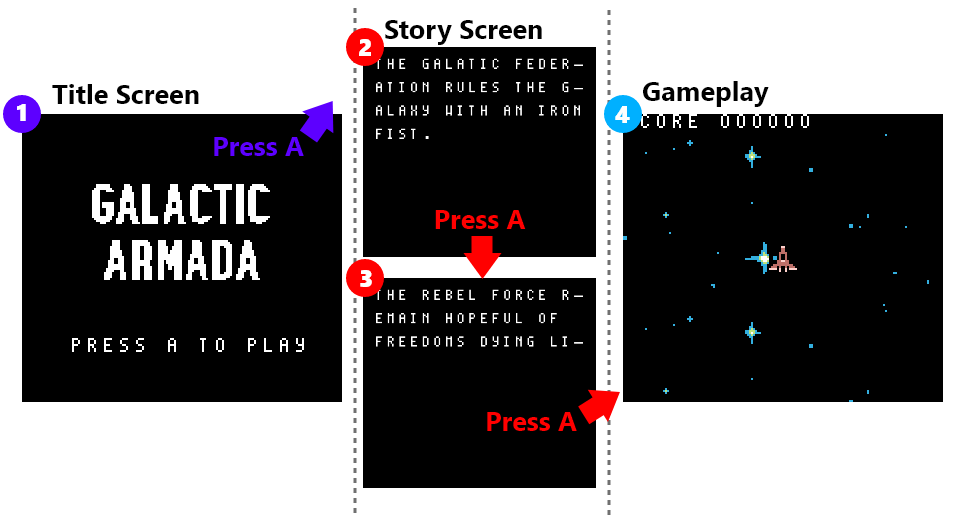
This page will show you how to setup basic game state management. For organization, we’ll put our game state management code inside of a new file.
Create “game-state-management.asm” right next to the entrypoint “GalacticArmada.asm”
Setting up Game State Management
First thing we’ll do in our new “game-state-management.asm” file is setup 3 variables in working ram.
- wCurrentGameState_Update - the address of the current game state’s update function
- wNextGameState_Initiate - If we are changing game states, this will be non-zero. In that case, it will be the address of the “initiate” function for that game state.
- wNextGameState_Update - If we are changing game states, this will be non-zero. In that case, it will be the address of the “update” function for that game state. It will overwrite the
wCurrentGameState_Updatevariable after the abovewNextGameState_Initiateis called.
Create those 3 variables as “words” at the top of our game-state-management.asm file, in the working ram section titled “GameStateManagementVariables”:
Note: See the RGBDS page on “Defining Data” for more information about variable types.
INCLUDE "src/main/includes/hardware.inc"
SECTION "GameStateManagementVariables", WRAM0
wCurrentGameState_Update:: dw
wNextGameState_Initiate:: dw
wNextGameState_Update:: dw
Next, create a function called InitializeGameStateManagement. This function should go inside of a section called “GameStateManagement”, and be exported. See here for more information about exporting.
In this function we’ll default all of our game state variables to 0.
SECTION "GameStateManagement", ROM0
InitializeGameStateManagment::
; Default our game state variables
ld a, 0
ld [wCurrentGameState_Update+0], a
ld [wCurrentGameState_Update+1], a
ld [wNextGameState_Initiate+0], a
ld [wNextGameState_Initiate+1], a
ld [wNextGameState_Update+0], a
ld [wNextGameState_Update+1], a
ret
If we return back to our GalacticArmada.asm file, we’ll put in a call to our new InitializeGameStateManagement function. This function call will go right before our game loop:
; Inside of GalacticArmada.asm
; ... Previous "EntryPoint" logic
call InitializeGameStateManagment
GalacticArmadaGameLoop:
Now we have to setup and implement those variables. To do that, we’ll create the following functions:
- InitiateNewGameStates - This will initialize the new game state, if we are changing game states.
- UpdateCurrentGameState - This will update the current game state, if it exists.
Initiate New Game States
We previously created a wNextGameState_Initiate variable. This variable will be used to hold an address. That address will point to the initiation logic for the next game state. If this variable is 0, then the game is NOT changing game states. If the variable is NOT 0, then we’ll call the function it specifies.
After we’ve called that initiate function, we’ll update our wCurrentGameState_Update variable. We’ll override it’s current value, with the value specified in our other variable: wNextGameState_Update. This will tell the game to start calling the new game state’s update logic instead of our curernt/old one.
With those changes done, we’ll reset our wNextGameState_Initiate and wNextGameState_Update variables back to 0. This will prevent the initiation logic from executing again until we change the game state.
Create this function at the bottom of the game-state-management.asm file:
InitiateNewCurrentGameState::
; If this is 0, we are not changing game states
ld a, [wNextGameState_Initiate+0]
ld l, a
ld a, [wNextGameState_Initiate+1]
or a, l
ret z
ld a, [wNextGameState_Initiate+1]
ld h, a
call callHL
ld a, [wNextGameState_Update+0]
ld [wCurrentGameState_Update+0], a
ld a, [wNextGameState_Update+1]
ld [wCurrentGameState_Update+1], a
; Reset these to zero
ld a, 0
ld [wNextGameState_Initiate+0],a
ld [wNextGameState_Initiate+1], a
ld [wNextGameState_Update+0], a
ld [wNextGameState_Update+1], a
ret
Note: The
callHLfunction will already be included in the starter. It simply provides an easy way to jump to dynamic addresses and return afterwards.
Updating the current Game State
For updating the current game state, we’ll get the address in our wCurrentGameState_Update variable. If it’s 0, we’ll return early. Otherwise, we’ll call the function located at that address and return when the function is done.
Create this function at the bottom of the game-state-management.asm file:
UpdateCurrentGameState::
; Get the address of the current game state
ld a, [wCurrentGameState_Update+0]
ld l, a
ld a, [wCurrentGameState_Update+1]
or a, l
; Stop if we have a 0 value
ret z
; call the function in HL
ld a, [wCurrentGameState_Update+1]
ld h, a
call callHL
ret
Adding Game State Management to our Game Loop
Now that we have created our InitiateNewCurrentGameState and UpdateCurrentGameState functions, we can implement them
Go back to our “GalacticArmada.asm” file. In the GalacticArmadaGameLoop function, (after we call ResetShadowOAM) add calls to those 2 functions
; Inside of GalacticArmada.asm
GalacticArmadaGameLoop:
; ... existing logic calling 'Input' and `ResetShadowOAM`
call InitiateNewCurrentGameState
call UpdateCurrentGameState
; ... existing logic waiting for VBlank start, before calling `hOAMDMA` and looping.
That wraps up game state management for now. We’ve got one more thing to do, setup a default game state. That task won’t be done yet.
In the next page, you’ll create the title screen. Once we’ve fully setup that game state, we’ll come back to the GalacticArmada.asm file and specify it as our default game state.
Title Screen
The title screen shows a basic title image using the background and draws text asking the player to press A. Once the user presses A, it will go to the story screen.
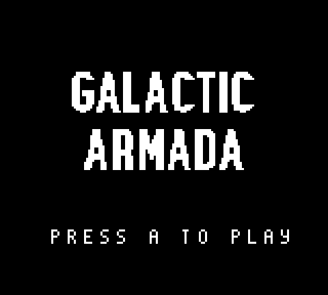Our title screen has 3 pieces of data:
- The “Press A to play” text
- The title screen tile data
- The title screen tilemap
Create a new assembly file called “title-screen-state.asm”. You can put it anywhere, but we’ve organized ours in the “src/main/states/title-screen” folder.
In that file, create ROM0 section, and add includes for “hardware.inc”, and “character-mapping.inc”
INCLUDE "src/main/includes/hardware.inc"
INCLUDE "src/main/includes/character-mapping.inc"
SECTION "TitleScreenState", ROM0
Like with pretty much every other file, we’ll need the hardware.inc because of all it’s useful helper constants. The character-mapping.inc comes with the starter. It’s needed so RGBDS knows how to map our text to bytes.
Next, We’re going to add 2 more functions to this file:
- InitTitleScreenState
- UpdateTitleScreenState
Initiating the Title Screen
In our title screen’s InitTitleScreen function, we’ll do the following:
- Clear the background and any sprites (because other game states may change/use them)
- Reset the position of the background (because gameplay later will move it)
- draw the title screen graphic
- draw our “Press A to play”
However, like in the second tutorial, before we cance change our background we need to turn off the LCD.
“[We] wait until “VBlank”, which is the only time you can safely turn off the screen (doing so at the wrong time could damage a real Game Boy, so this is very crucial). We’ll explain what VBlank is and talk about it more later in the tutorial.
Turning off the screen is important because loading new tiles while the screen is on is tricky“ From Tutorial 2 - Regarding setting tile data and the LCD
For drawing our title screen, we’ll use the LoadTextFontIntoVRAM and DrawTitleScreen functions that came with the starter. (Explained in the Previous section)
With those 2 functions done, Here is what our “InitTitleScreenState” function looks like
InitTitleScreenState::
call WaitForVBlankStart
; Turn the LCD off
ld a, 0
ldh [rLCDC], a
; reset the position of the background
ld a, 0
ld [rSCX], a
ld [rSCY], a
; Clear the background and all sprites
call ClearBackground
call ResetShadowOAM
call hOAMDMA
call DisableInterrupts
call LoadTextFontIntoVRAM
call DrawTitleScreen
; Call Our function that draws text onto background/window tiles
ld de, $99C3
ld hl, wPressPlayText
call DrawTextInHL_AtDE
; Turn the LCD on
ld a, LCDCF_ON | LCDCF_BGON| LCDCF_WIN9C00|LCDCF_BG9800
ldh [rLCDC], a
ret;
Note: We clear our background and reset our shadow OAM to avoid any lingering sprites/tiles when the game transitions from gameplay to title screen.
In order to draw text in our game, we’ve created a function called DrawTextInHL_AtDE. We’ll pass this function which tile to start on in de, and the address of our text in hl.
Next, we need to update our logic for our title screen.
Updating the Title Screen
The title screen’s update logic is the simplest of the 3. All we are going to do is wait until the A button is pressed. Afterwards, we’ll go to the story screen game state.
We tell our game state management code the next game state to go to by passing that game state’s initate function and update function into the wNextGameState_Initiate and wNextGameState_Update variables repsectively.
UpdateTitleScreenState::
call WaitForAToBePressed
ld hl, InitStoryState
ld a, l
ld [wNextGameState_Initiate+0], a
ld a, h
ld [wNextGameState_Initiate+1], a
ld hl, UpdateStoryState
ld a, l
ld [wNextGameState_Update+0], a
ld a, h
ld [wNextGameState_Update+1], a
ret
That’s it for our title screen. Next up is our story screen.
Story Screen
The story screen shows a basic story on 2 pages. Afterwards, it sends the player to the gameplay game state.
 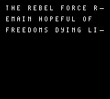
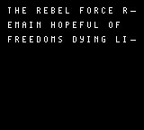
Initiating up the Story Screen
In the InitStoryState we’ll just going to turn on the LCD. Most of the game state’s logic will occur in its update function.
Create a file named story-screen.asm. In that file add includes to hardware.inc and character-mapping.inc, and create a section in ROM0.
INCLUDE "src/main/includes/hardware.inc"
INCLUDE "src/main/includes/character-mapping.inc"
SECTION "StoryStateASM", ROM0
Like we did with the title screen, we’ll need to setup a function for the Story State’s initation logic. This function, called InitStoryState will be very similar to that of the title screen. The major difference is that nothing will be drawn in the InitStoryState function.
Add the following to your new story-screen.asm file.
InitStoryState::
call WaitForVBlankStart
; Turn the LCD off
ld a, 0
ld [rLCDC], a
call ClearBackground
call ResetShadowOAM
call hOAMDMA
; Turn the LCD on
ld a, LCDCF_ON | LCDCF_BGON
ld [rLCDC], a
ret;
Updating the Story Screen
Here’s the data for our story screen. We have this defined just above our UpdateStoryState function.
Copy this data into your story-screen.asm file.
Story:
.Line1 db "the galatic empire", 255
.Line2 db "rules the galaxy", 255
.Line3 db "with an iron", 255
.Line4 db "fist.", 255, 255
Story2:
.Line1 db "the rebel force", 255
.Line2 db "remain hopeful of", 255
.Line3 db "freedoms light", 255, 255
The story text is shown using a typewriter effect. This effect is done similarly to the “press a to play” text that was done before, but here we wait for 3 vertical blank phases between writing each letter, giving some additional delay.
**Note: The
WaitForAToBePressedis a utility function that comes with the starter. You can find more info on it in the utilties page. **
We’ll call the MultilineTypewriteTextInHL_AtDE function exactly how we called the DrawTextTilesLoop function.
Create a function called UpdateStoryState in story-state.asm. Export this function and tell it to call the MultilineTypewriteTextInHL_AtDE function. Pass $9821 t DE as the location to start writing/drawing. Pass Story.Line1 to HL as the text draw.
UpdateStoryState::
; Call Our function that typewrites text onto background/window tiles
ld de, $9821
ld hl, Story.Line1
call MultilineTypewriteTextInHL_AtDE
Our basic story has 2 pages. After the first page has drawn, we’ll wait until the A button is pressed. After such, we’ll start drawing the second page. In-between pages we need to clear the background, so no extra text tiles linger.
Add the following code immediately after your previous call to MultilineTypewriteTextInHL_AtDE with Story.Line1
call WaitForAToBePressed
call WaitForVBlankStart
; Turn the LCD off
ld a, 0
ld [rLCDC], a
call ClearBackground
; Turn the LCD on
ld a, LCDCF_ON | LCDCF_BGON
ld [rLCDC], a
After we’ve shown the first page and cleared the background, we’ll do the same thing for page 2:
Add this second implementation of the MultilineTypewriteTextInHL_AtDE function to draw the second page of our story:
; Call Our function that typewrites text onto background/window tiles
ld de, $9821
ld hl, Story2.Line1
call MultilineTypewriteTextInHL_AtDE
With our story full shown, once the player presses the A button, we’re ready to move onto the next game state: Gameplay. We’ll end our UpdateStoryState function by updating our game state variable and jump back to the NextGameState label like previously discussed.
Complete the story state and our UpdateStoryState function using the code below:
call WaitForAToBePressed
ld hl, InitGameplayState
ld a, l
ld [wNextGameState_Initiate+0], a
ld a, h
ld [wNextGameState_Initiate+1], a
ld hl, UpdateGameplayState
ld a, l
ld [wNextGameState_Update+0], a
ld a, h
ld [wNextGameState_Update+1], a
ret
Gameplay State
In this game state, the player will control a spaceship. Flying over a vertically scrolling space background. They’ll be able to freely move in 4 directions , and shoot oncoming alien ships. As alien ships are destroyed by bullets, the player’s score will increase.

Gameplay is the core chunk of the source code. It also took the most time to create. Because of such, this game state has to be split into multiple sub-pages. Each page will explain a different gameplay concept.
Create gameplay-state.asm, and add the following data and variables:
INCLUDE "src/main/includes/hardware.inc"
INCLUDE "src/main/includes/constants.inc"
INCLUDE "src/main/includes/character-mapping.inc"
SECTION "GameplayVariables", WRAM0
wScore:: ds 6
wLives:: db
SECTION "GameplayState", ROM0
wScoreText:: db "score", 255
wLivesText:: db "lives", 255
For simplicity reasons, our score uses 6 bytes. Each byte repesents one digit in the score.
Initiating the Gameplay Game State:
When gameplay starts we want to do all of the following:
- reset the player’s score to 0
- reset the player’s lives to 3.
- Initialize all of our object pool
- Clear the background and any existing sprites
- Setup VRAM with the neccessary tile data
- Enable STAT interrupts for the HUD
- Draw our “score” & “lives” on the HUD.
- Reset the window’s position back to 7,0
- Enable the window using the tilemap at $9C00
Note: Object pools will be covered in the next page.
Copy the following code to the bottom of your gameplay-state.asm file
InitGameplayState::
ld a, 3
ld [wLives+0], a
ld a, 0
ld [wScore+0], a
ld [wScore+1], a
ld [wScore+2], a
ld [wScore+3], a
ld [wScore+4], a
ld [wScore+5], a
call InitializeObjectPool
call InitializePlayer
call WaitForVBlankStart
; Turn the LCD off
ld a, 0
ld [rLCDC], a
call ClearBackground
call ResetShadowOAM
call hOAMDMA
call CopyPlayerTileDataIntoVRAM
call CopyEnemyTileDataIntoVRAM
call CopyBulletTileDataIntoVRAM
call DrawStarFieldBackground
; Initiate STAT interrupts
call InitStatInterrupts
;;;;;;;;;;;;;;;;;;;;;;;;;;;;;;;;;;;;;;;;;;;;;;;;;;;;;;;;;;;;;;;;;;;;;;;;;;;;;;;;;;;;;;;
;;;;;;;;;;;;;;;;;;;;;;;;;;;;;;;;;;;;;;;;;;;;;;;;;;;;;;;;;;;;;;;;;;;;;;;;;;;;;;;;;;;;;;;
; Call Our function that draws text onto background/window tiles
ld de, $9c00
ld hl, wScoreText
call DrawTextInHL_AtDE
; Call Our function that draws text onto background/window tiles
ld de, $9c0D
ld hl, wLivesText
call DrawTextInHL_AtDE
ld hl, wScore
ld de, $9C06 ; The window tilemap starts at $9C00
ld b, 6
call DrawBDigitsHL_OnDE
ld hl, wLives
ld de, $9C13 ; The window tilemap starts at $9C00
ld b, 1
call DrawBDigitsHL_OnDE
;;;;;;;;;;;;;;;;;;;;;;;;;;;;;;;;;;;;;;;;;;;;;;;;;;;;;;;;;;;;;;;;;;;;;;;;;;;;;;;;;;;;;;;
;;;;;;;;;;;;;;;;;;;;;;;;;;;;;;;;;;;;;;;;;;;;;;;;;;;;;;;;;;;;;;;;;;;;;;;;;;;;;;;;;;;;;;;
ld a, 0
ld [rWY], a
ld a, 7
ld [rWX], a
; Turn the LCD on
ld a, LCDCF_ON | LCDCF_BGON|LCDCF_OBJON | LCDCF_OBJ16 | LCDCF_WINON | LCDCF_WIN9C00|LCDCF_BG9800
ld [rLCDC], a
ret;
The initialization logic for our the background, the player, the enemies, the bullets will be explained in later pages. Every game state is responsible for turning the LCD back on. The gameplay game state needs to use the window layer, so we’ll make sure that’s enabled before we return.
Updating the Gameplay Game State
Our “UpdateGameplayState” function doesn’t have very complicated logic. Most of the logic has been split into separate files for the background, player, enemies, and bullets.
During gameplay, we do all of the following:
- Try to spawn enemies
- Update our object pool
- Update our Background
- Check our player’s health, if it’s gone below zero we’ll end gameplay
Copy the following code to the bottom of your gameplay-state.asm file
UpdateGameplayState::
call TryToSpawnEnemies
call UpdateObjectPool
call UpdateBackground
ld a, [wObjects+object_healthByte]
cp a, 255
jp z, EndGameplay
ret
Ending gameplay is very simple, we’ll do the same thing we did to transition TO gameplay (from the story screen). We’ll simply put the address of the title screen’s init & update functions inside of our wNextGameState_Initiate and wNextGameState_Update variables.
Copy the following code to the bottom of your gameplay-state.asm file
EndGameplay:
ld hl, InitTitleScreenState
ld a, l
ld [wNextGameState_Initiate+0], a
ld a, h
ld [wNextGameState_Initiate+1], a
ld hl, UpdateTitleScreenState
ld a, l
ld [wNextGameState_Update+0], a
ld a, h
ld [wNextGameState_Update+1], a
ret
That’s it for gameplay, next we’ll go over object pools.
Object Pools
Galactic Armada will use a single “object pool” for all obejcts (the player, enemies, and bullets). This pool repsents an array of objects, but is realy just a collection of bytes. Each object has the same number of bytes allocated for it.
- Active (1 byte)
- Y Position (2 bytes)
- X Position (2 bytes)
- Metasprite address (2 bytes)
- Health (1 byte)
- Update function address (2 bytes)
- Damage Timer (1 byte)
We’ve pre-defined that in the starter.
inside of our constants.inc include file:
; from https://rgbds.gbdev.io/docs/v0.6.1/rgbasm.5#EXPRESSIONS
; The RS group of commands is a handy way of defining structure offsets:
RSRESET
DEF object_activeByte RB 1
DEF object_yLowByte RB 1
DEF object_yHighByte RB 1
DEF object_xLowByte RB 1
DEF object_xHighByte RB 1
DEF object_metaspriteLowByte RB 1
DEF object_metaspriteHighByte RB 1
DEF object_healthByte RB 1
DEF object_updateLowByte RB 1
DEF object_updateHighByte RB 1
DEF object_damageByte RB 1
DEF PER_OBJECT_BYTES_COUNT RB 0
We need to next setup and implement variables that use that structure.
Create a file called object-pool.asm, add the following code to it:
include "src/main/includes/hardware.inc"
include "src/main/includes/constants.inc"
SECTION "ObjectVariables", WRAM0
wObjects:: ds MAX_OBJECT_COUNT*PER_OBJECT_BYTES_COUNT
wObjectsEnd:: db
wObjectsFlash:: db
SECTION "Objects", ROM0
We’ll explain each variable soon, but notice how we allocated space in WRAM for wObjects. Rather than using a literal number for how many objects our game can handle, we use the constant MAX_OBJECT_COUNT. This constant is declared in constants.inc, and prevents any sort of inconsistincies if we change our minds.
Initializing the object pool
When we initialize the object pool, we need to do 2 primary things:
- Set all bytes in the pool to 0
- Set our
wObjectsEndvariable to 255
Our wObjectsEnd variable is used to simplify looping through all objects. More on that later.
Add the following code to the bottom of your object-pool.asm file:
InitializeObjectPool::
; The active byte will awlays be 0 or 1
; When looping through the wObjects, if we read 255 we've reached wObjectsEnd
ld a, 255
ld [wObjectsEnd], a
ld hl, wObjects
ld b, MAX_OBJECT_COUNT
InitializeObjectPool_Loop:
ld a, 0
; Default each byte as 0
; Using REPT incase the object size changes
REPT PER_OBJECT_BYTES_COUNT
ld [hli], a
ENDR
; Decrease how many we have to initialize
; Stop this loop when b reaches zero
ld a, b
dec a
and a
ret z
ld b, a
jp InitializeObjectPool_Loop
The above code is just going to loop through each object, and set all of it’s bytes to 0.
Updating objects in our object pool
We’ve created a variable called wObjectsFlash. This will be used as a counter. We’ll increase it each frame. Because it’s a a unsigned 8-bit integer, it’s values will be between 0 and 255. Later, When it’s value is larger than 128, any object that is damaged will not be shown. This overall creates a “blinking” damaged effect.
UpdateObjectPool::
; Increase our flash
ld a, [wObjectsFlash]
add a,25
ld [wObjectsFlash], a
We’re going to loop through each object in our object pool. Our wObjectsEnd variable is used to simplify looping through all objects. When iterating through our wObjects, the first byte for an object is the active byte (aka object_activeByte in constants.inc). The valid values of this byte are 0 and 1. If the code reads a 255 (from wObjectsEnd), then we know we’ve reached the end of the bytes associated with our object pool.
If we haven’t read 255 yet, then we need to check if the current object is active. We can use and a (where the value in the ‘a’ register comes from the previous ‘ld’ instruction). If the zero flag is set, then that object is inactive and we’ll jump to the next object.
The Code will proceed on, if the object is active.
ld hl, wObjects
UpdateObjectPool_Loop:
; The active byte should be 0 or 1
; When we reach a 255, we've reached the wObjectsEnd
ld a, [hl]
cp a, 255
ret z
; Check if the object is active
and a
jp z, UpdateObjectPool_GoToNextObject
The first thing we’ll do for an active object is call it’s update function. We’ll copy the address of that function into it ‘hl’ and call it. Before such, we need to push hl onto the stack. When we’re done calling our object’s update function, we’ll pop it off the stack.
Note: Before we change ‘hl’, we’ll copy it’s value into ‘bc’. For each object’s update function, ‘bc’ will have the address of that object’s first byte.
After updating, we want to draw the object. Before so, we need to check if the object is inactive. If so, we’ll avoid drawing and jump to the next object.
.UpdateObject
push hl
ld b, h
ld c, l
; Move to the update
ld de, object_updateLowByte
add hl, de
; hl points to the low byte for the address of the update function
; copy that address INTO hl
ld a, [hli]
ld h, [hl]
ld l, a
call callHL
pop hl
; Check if we're inactive after updating
ld a, [hl]
and a
jp z , UpdateObjectPool_GoToNextObject
AFter updating, if our object is still active, we’ll conditionally draw the object. Now we’re going to put into use the previously mentioned wObjectsFlash variable.
Each object has a damage byte (aka object_damageByte in constants.inc). If this byte is non-zero, the associated object has been damaged and we want it to blink. We’ll skip drawing the object if the damage byte is non-zero and the wObjectsFlash variable is greater than 128.
.CheckIsDamaged
push hl
; Move to the y low byte
ld de, object_damageByte
add hl, de
; Check this object is damaged
ld a, [hl]
and a
jp z, NotDamaged
jp Damaged
Damaged:
; decrease our damage byte
dec a
ld [hl], a
pop hl
; if our objects timer is greater than 0 we'll not draw
ld a, [wObjectsFlash]
cp a, 128
jp c, UpdateObjectPool_GoToNextObject
push hl
NotDamaged:
pop hl
jp z, GetXAndY
For drawing our object, we’ll use the RenderMetasprite function from Evieue’s Sprite Object library. This function requires the following parameters:
- the Q12.4 Fixed-point y position in bc
- The Q12.4 fixed-point X position in de
- The Pointer to current metasprite in hl
To prepare for that function, we’ll copy bytes from our object to the proper registers.
Note: After copying our x position to de, our ‘hl’ registers are not exactly what we need for
RenderMetasprite. At that point in time, ‘hl’ doesn’t contain the address of our metasprite. It contains a pointer to that address.
After rendering our metasprite, we’ll pop the start of our metasprite off the stack. This makes going to the next object simple. With ‘hl’ pointing to our object’s first byte, we simply need to increment ‘hl’
GetXAndY:
push hl
; Move to the y low byte
ld de, object_yLowByte
add hl, de
; Copy our y position to bc
ld a, [hli]
ld c, a
ld a, [hli]
ld b, a
; Copy our x position to de
ld a, [hli]
ld e, a
ld a, [hli]
ld d, a
.RenderObjectMetasprite
ld a, [hli]
ld h, [hl]
ld l, a
call RenderMetasprite
pop hl
jp UpdateObjectPool_GoToNextObject
When ‘hl’ points to the first byte of an object ,we can easily move on to the next object. This is done by adding to it: the dynamic constant PER_OBJECT_BYTES_COUNT (from constants.inc). From there, we’ll go back to our UpdateObjectPool_Loop label and repeat until we read 255.
UpdateObjectPool_GoToNextObject:
ld de, PER_OBJECT_BYTES_COUNT
add hl, de
jp UpdateObjectPool_Loop
Getting an inactive object
When firing bullets and/or when spawning enemies, we’ll need to find an object in our pool that is inactive. For this, we’ll create a function called GetNextAvailableObject_InHL
This function takes two parameters
- the starting byte in hl
- how many objects to check in b
When this function is done, if the zero flag is not set: an inactive object has been found. At that point in time, ‘hl’ will point to the first byte of that object.
; parameters
; hl = start of array bytes
; b = number of objects to check
; example:
; ld hl, wObjects+BULLETS_START
; ld b, MAX_BULLET_COUNT
GetNextAvailableObject_InHL::
GetNextAvailableObject_Loop:
ld a, [hl]
and a
jp nz, GetNextAvailableObject_Next
ld a, 1
and a
ret
GetNextAvailableObject_Next:
ld a, b
dec a
ld b, a
jp z, GetNextAvailableObject_End
; move to the next object
ld de, PER_OBJECT_BYTES_COUNT
add hl, de
jp GetNextAvailableObject_Loop
GetNextAvailableObject_End:
ld a, 0
and a
ret;
Later, when spawning bullets, we’ll call that function like so:
This code will be covered later
FireNextBullet::
ld hl, wObjects+BULLETS_START
ld b, MAX_BULLET_COUNT
; Get the next available bullet, and put it's address in hl
; if the zero flag is set, stop early
call GetNextAvailableObject_InHL
ret z
; ... More FireNextBullet logic
Object Collision Detection
Collision Detection is cruical to games. It can be a very complicated topic. In Galactic Armada, things will be kept super simple. We’re going to perform a basic implementation of “Axis-Aligned Bounding Box Collision Detection”:
One of the simpler forms of collision detection is between two rectangles that are axis aligned — meaning no rotation. The algorithm works by ensuring there is no gap between any of the 4 sides of the rectangles. Any gap means a collision does not exist.1
The easiest way to check for overlap, is to check the difference bewteen their centers. If the absolute value of their x & y differences (I’ll refer to as “the absolute difference”) are BOTH smaller than the sum of their half widths, we have a collision. This collision detection is run for bullets against enemies, and enemies against the player. Here’s a visualization with bullets and enemies.
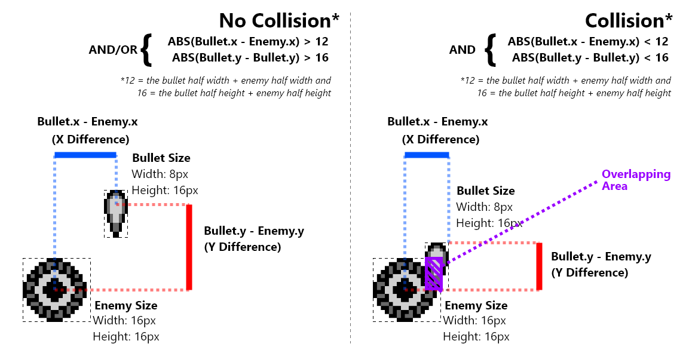
For collision detection between objects in our object pool, we’ll setup a universal function. This function, called CheckCollisionWithObjectsInHL_andDE, will have 4 requirements:
- A pointer to Object A in
hl - A pointer to Object B in
de - The minimum allowed distance on the x axis in
wSizeX - The minimum allowed distance on the y-axis in
wSizeY
Create a file called object-collision.asm and add the following code:
include "src/main/includes/hardware.inc"
include "src/main/includes/constants.inc"
include "src/main/includes/hardware.inc"
SECTION "ObjectObjectCollisionVariables", WRAM0
wSizeY:: db
wSizeX:: db
wCheckByte: db
SECTION "ObjectObjectCollision", ROM0
The logic for checking the distance on the x & y axes is identical. For that reason, we’ve isolated it into a function called CheckObjectBytesOfObjects_InDE_AndHL. We’ll cover that function before we cove the CheckCollisionWithObjectsInHL_andDE function.
Comparing the bytes on our two objects
All of our object’s data share the same order and structure. For collision detection, we want to check the same bytes (the 2 x bytes , or the 2 y bytes) for 2 different objects. For this, we’ve created the function called CheckObjectBytesOfObjects_InDE_AndHL. This function has 3 requirements:
- A pointer to Object A in
hl - A pointer to Object B in
de - Which byte to check in
wCheckByte
This function uses the CheckObjectPositionDifference function that comes with the starter. Our x & y bytes are Q12.4 fixed point integers. Before we can use them, we need to descale them. After descaling them, we’ll call the CheckObjectPositionDifference function and use it’s result as our own.
CheckObjectBytesOfObjects_InDE_AndHL::
; put de in hl so we can get the x bytes (for the de object) in bc and descale just to c
push hl
; Offset de by the check byte
ld a, [wCheckByte]
add a,e
ld e,a
; copy the low byte to c
ld a, [de]
ld c, a
; move to the high byte
inc de
; copy the high byte to b
ld a, [de]
ld b, a
; Descale
REPT 4
srl b
rr c
ENDR
ld a, c
ld [wObject1Value], a
pop hl
; get the bytes (for the hl object) in bc and descale just to c
ld a, [wCheckByte]
add a, l
ld l, a
; move to the high byte
ld a, [hli]
ld c, a
; copy the high byte to b
ld a, [hl]
ld b, a
; Descale
REPT 4
srl b
rr c
ENDR
ld a, c
ld [wObject2Value], a
CheckObjectPositionDifference::
; at this point in time; e = enemy.y, b =bullet.y
ld a, [wObject1Value]
ld e, a
ld a, [wObject2Value]
ld b, a
ld a, [wSize]
ld d, a
; subtract bullet.y, (aka b) - (enemy.y+8, aka e)
; carry means e<b, means enemy.bottom is visually above bullet.y (no collision)
ld a, e
add a, d
cp a, b
; carry means no collision
jp c, CheckObjectPositionDifference_Failure
; subtract enemy.y-8 (aka e) - bullet.y (aka b)
; no carry means e>b, means enemy.top is visually below bullet.y (no collision)
ld a, e
sub a, d
cp a, b
; no carry means no collision
jp nc, CheckObjectPositionDifference_Failure
CheckObjectPositionDifference_Intersection:
ld a,1
and a
ret;
CheckObjectPositionDifference_Failure:
ld a,0
and a
ret;
Checking for collision
Now that we’ve defined the CheckObjectBytesOfObjects_InDE_AndHL function, we can implement our main function.
Create the CheckCollisionWithObjectsInHL_andDE function in your object-collision.asm
Note: This function should be exported, since it is going to be callled in other files.
CheckCollisionWithObjectsInHL_andDE::
The x-axis is up first. In a nutshell, we simply pass which byte we and distance we want to check to the CheckObjectBytesOfObjects_InDE_AndHL function. If it returns a value of zero, there is no overlap on that axis. Otherwise, we’ll proceed on to check the y-axis
Copy the following into the CheckCollisionWithObjectsInHL_andDE function
XAxis:
; Save which byte we are checking
ld a, object_xLowByte
ld [wCheckByte], a
; Save if the minimum distance
ld a, [wSizeX]
ld [wSize], a
; SAve original values for y axis
push de
push hl
call CheckObjectBytesOfObjects_InDE_AndHL
; Restore original vaues just in case
pop hl
pop de
jp nz, YAxis
ld a,0
and a
ret
After checking the x-axis, we’ll do the same thing for the y-axis.
YAxis:
; Save which byte we are checking
ld a, object_yLowByte
ld [wCheckByte], a
; Save if the minimum distance
ld a, [wSizeY]
ld [wSize], a
call CheckObjectBytesOfObjects_InDE_AndHL
; Normal return with the z/c flags as-is
ret
After the CheckObjectBytesOfObjects_InDE_AndHL function is called, we’ll return from the CheckCollisionWithObjectsInHL_andDE function. The result flags from the last CheckObjectBytesOfObjects_InDE_AndHL will be used for the whole function.
Scrolling Background
Scrolling the background is an easy task. However, for a SMOOTH slow scrolling background: scaled integers1 will be used.
⚠️ Scaled Integers1 are a way to provide smooth “sub-pixel” movement. They are slightly more difficult to understand & implement than implementing a counter, but they provide smoother motion.
Initializing the Background
At the start of the gameplay game state we called the initialize background function. This function shows the star field background, and resets our background scroll variables:
Create a file called backgrounds.asm and add the following code:
INCLUDE "src/main/includes/hardware.inc"
INCLUDE "src/main/includes/character-mapping.inc"
SECTION "BackgroundVariables", WRAM0
mBackgroundScroll:: dw
SECTION "GameplayBackgroundSection", ROM0
InitializeBackground::
call DrawStarFieldBackground
ld a, 0
ld [mBackgroundScroll+0],a
ld a, 0
ld [mBackgroundScroll+1],a
ret
To scroll the background in a gameboy game, we simply need to gradually change the SCX or SCX registers. Our code is a tiny bit more complicated because of scaled integer usage. Our background’s scroll position is stored in a 16-bit integer called mBackgroundScroll. We’l increase that 16-bit integer by a set amount.
Copy the UpdateBackground code below into your backgrounds.asm
; This is called during gameplay state on every frame
UpdateBackground::
; Increase our scaled integer by 5
; Get our true (non-scaled) value, and save it for later usage in bc
ld a , [mBackgroundScroll+0]
add a , 5
ld b,a
ld [mBackgroundScroll+0], a
ld a , [mBackgroundScroll+1]
adc a , 0
ld c,a
ld [mBackgroundScroll+1], a
We won’t directly draw the background using this value. De-scaling a scaled integer simulates having a (more precise and useful for smooth movement) floating-point number. The value we draw our background at will be the de-scaled version of that 16-bit integer. To get that non-scaled version, we’ll simply shift all of it’s bit rightward 4 places. The final result will saved for when we update our background’s y position.
Copy the code below into your backgrounds.asm
; Descale our scaled integer
; shift bits to the right 4 spaces
srl c
rr b
srl c
rr b
srl c
rr b
srl c
rr b
; Use the de-scaled low byte as the backgrounds position
ld a,b
ld [rSCY], a
ret
Heads Up Interface
The gameboy normally draws sprites over both the window and background, and the window over the background. In Galactic Armada, The background is vertically scrolling. This means the HUD (the score text and number) needs to be draw on the window, which is separate from the background.
On our HUD, we’ll draw both our score and our lives. We’ll also use STAT interrupts to make sure nothing covers the HUD.
Create a new file called hud.asm:
INCLUDE "src/main/includes/hardware.inc"
SECTION "GameplayHUD", ROM0
Increasing the score
To keep things simple, back in our gameplay game state, we used 6 different bytes to hold our score.Each byte will hold a value between 0 and 9, and represents a specific digit in the score. So it’s easy to loop through and edit the score number on the HUD: The First byte represents the left-most digit, and the last byte represents the right-most digit.

When the score increases, we’ll increase digits on the right. As they go higher than 9, we’ll reset back to 0 and increase the previous byte .
Add this IncreaseScore function to your hud.asm file:
IncreaseScore::
; We have 6 digits, start with the right-most digit (the last byte)
ld c, 0
ld hl, wScore+5
IncreaseScore_Loop:
; Increase the digit
ld a, [hl]
inc a
ld [hl], a
; Stop if it hasn't gone past 0
cp a, 9
ret c
; If it HAS gone past 9
IncreaseScore_Next:
; Increase a counter so we can not go out of our scores bounds
ld a, c
inc a
ld c, a
; Check if we've gone our o our scores bounds
cp a, 6
ret z
; Reset the current digit to zero
; Then go to the previous byte (visually: to the left)
ld a, 0
ld [hl], a
ld [hld], a
jp IncreaseScore_Loop
We can call that score whenever a bullet hits an enemy. This function however does not draw our score on the background.
STAT Interrupts & the window
The window is not enabled by default. We can enable the window using the LCDC register. RGBDS comes with constants that will help us.
⚠️ NOTE: The window can essentially be a copy of the background. The
LCDCF_WIN9C00|LCDCF_BG9800portion makes the background and window use different tilemaps when drawn. There’s only one problem. Since the window is drawn between sprites and the background. Without any extra effort, our scrolling background tilemap will be covered by our window. In addition, our sprites will be drawn over our hud. For this, we’ll need STAT interrupts. Fore more information on STAT interrupts, check out the pandocs: https://gbdev.io/pandocs/Interrupt_Sources.html
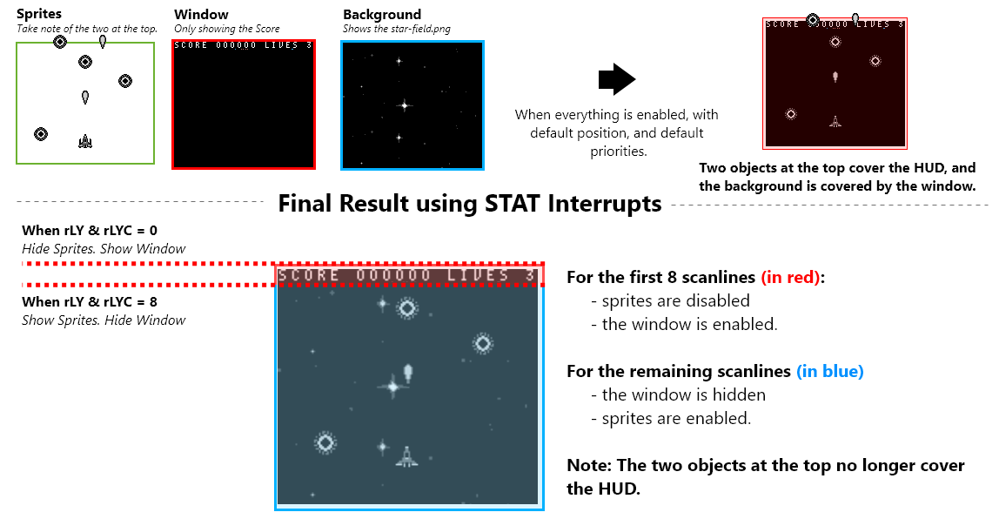
Using the STAT interrupt
One very popular use is to indicate to the user when the video hardware is about to redraw a given LCD line. This can be useful for dynamically controlling the SCX/SCY registers ($FF43/$FF42) to perform special video effects.
Example application: set LYC to WY, enable LY=LYC interrupt, and have the handler disable sprites. This can be used if you use the window for a text box (at the bottom of the screen), and you want sprites to be hidden by the text box.
With STAT interrupts, we can implement raster effects. in our case, we’ll enable the window and stop drawing sprites on the first 8 scanlines. Afterwards, we’ll show sprites and disable the window layer for the remaining scanlines. This makes sure nothing overlaps our HUD, and that our background is fully shown also.
Initiating & Disabling STAT interrupts
In our gameplay game state, at different points in time, we initialized and disabled interrupts.
Add these 2 functions to your hud.asm file:
SECTION "Interrupts", ROM0
DisableInterrupts::
ld a, 0
ldh [rSTAT], a
di
ret
InitStatInterrupts::
ld a, IEF_STAT
ldh [rIE], a
xor a, a ; This is equivalent to `ld a, 0`!
ldh [rIF], a
ei
; This makes our stat interrupts occur when the current scanline is equal to the rLYC register
ld a, STATF_LYC
ldh [rSTAT], a
; We'll start with the first scanline
; The first stat interrupt will call the next time rLY = 0
ld a, 0
ldh [rLYC], a
ret
Defining STAT interrupts
Our actual STAT interrupts must be located at $0048. We’ll define different paths depending on what our LYC variable’s value is when executed.
Finish the hud.asm file wih the following section below:
; Define a new section and hard-code it to be at $0048.
SECTION "Stat Interrupt", ROM0[$0048]
StatInterrupt:
push af
; Check if we are on the first scanline
ldh a, [rLYC]
cp 0
jp z, LYCEqualsZero
LYCEquals8:
; Don't call the next stat interrupt until scanline 8
ld a, 0
ldh [rLYC], a
; Turn the LCD on including sprites. But no window
ld a, LCDCF_ON | LCDCF_BGON | LCDCF_OBJON | LCDCF_OBJ16 | LCDCF_WINOFF | LCDCF_WIN9C00
ldh [rLCDC], a
jp EndStatInterrupts
LYCEqualsZero:
; Don't call the next stat interrupt until scanline 8
ld a, 8
ldh [rLYC], a
; Turn the LCD on including the window. But no sprites
ld a, LCDCF_ON | LCDCF_BGON | LCDCF_OBJOFF | LCDCF_OBJ16| LCDCF_WINON | LCDCF_WIN9C00
ldh [rLCDC], a
EndStatInterrupts:
pop af
reti;
That should be all it takes to get a properly drawn HUD. For more details, check out the code in the repo or ask questions on the gbdev discord server.
The Player
The player’s logic is pretty simple. The player can move in 4 directions and fire bullets. We update the player by checking our input directions and the A button. We’ll move in the proper direction if its associated d-pad button is pressed. If the A button is pressed, we’ll spawn a new bullet at the player’s position.
Create a new file named “player.asm”
include "src/main/includes/hardware.inc"
include "src/main/includes/constants.inc"
SECTION "Player", ROM0
Our player isn’t going to need any special variables. All variables needed have already been setup.
Initializing the Player
When gameplay starts, we need to initialize the player.
- Set the player’s object struct as active (so nothing else takes it’s spot)
- Position the player in the middle of the screen
- Set the player’s metasprite to draw with
- Set the player’s health
- Set the player’s update function
Copy the following InitializePlayer function into player.asm
InitializePlayer::
ld hl, wObjects
; Set the active byte
ld a,1
ld [hli], a
; Set the y position
ld a,0
ld [hli], a
ld a, 5
ld [hli], a
; Set the x position
ld a, 0
ld [hli], a
ld a, 5
ld [hli], a
; Set the metasprite
ld a, LOW(playerTestMetaSprite)
ld [hli], a
ld a, HIGH(playerTestMetaSprite)
ld [hli], a
; Set the health
ld a, 3
ld [hli], a
; Set the update
ld a, LOW(UpdatePlayer)
ld [hli], a
ld a, HIGH(UpdatePlayer)
ld [hli], a
ret
Updating the Player
For our player’s update function, we just check for joypad input and handle it accordingly.
- Move in any direction pressed
- Fire a bullet if the a button is pressed
Copy this UpdatePlayer function into your player.asm file
UpdatePlayer::
ld a, [wCurKeys]
and a, PADF_UP
call nz, MoveUp
ld a, [wCurKeys]
and a, PADF_DOWN
call nz, MoveDown
ld a, [wCurKeys]
and a, PADF_LEFT
call nz, MoveLeft
ld a, [wCurKeys]
and a, PADF_RIGHT
call nz, MoveRight
ld a, [wNewKeys]
and a, PADF_A
call nz, FireNextBullet
ret
Our movement functions should all look very similar. Since our player is the first object of the wObjects array, we can access it’s positional bytes using constants from constants.inc:
- y low byte = wObjects+object_yLowByte
- y high byte = wObjects+object_yHighByte
- x low byte = wObjects+object_xLowByte
- x high byte = wObjects+object_xHighByte
Note: Our x & y positions are Q12.4 Fixed-Point integers. We’ll increase the low byte first, and then apply the carry over to the high byte.
Copy the following Move<Up/Down/Right/Left> functions into player.asm
MoveUp:
ld hl, wObjects+object_yLowByte
ld a, [hl]
sub a, PLAYER_MOVE_SPEED
ld [hli], a
ld a, [hl]
sbc a, 0
ld [hl], a
ret
MoveDown:
ld hl, wObjects+object_yLowByte
ld a, [hl]
add a, PLAYER_MOVE_SPEED
ld [hli], a
ld a, [hl]
adc a, 0
ld [hl], a
ret
MoveLeft:
ld hl, wObjects+object_xLowByte
ld a, [hl]
sub a, PLAYER_MOVE_SPEED
ld [hli], a
ld a, [hl]
sbc a, 0
ld [hl], a
ret
MoveRight:
ld hl, wObjects+object_xLowByte
ld a, [hl]
add a, PLAYER_MOVE_SPEED
ld [hli], a
ld a, [hl]
adc a, 0
ld [hl], a
ret
We’ll go over the FireNextBullet function next, on the bullets page.
Damaging the player
When the player is damaged we’ll decrease it’s health byte, and set it’s damage byte to 128. Recall, when our damage byte is non-zero the object will blink.
Finish your player.asm by copying the DamagePlayer function to it
DamagePlayer::
ld a, [wObjects+object_healthByte]
dec a
ld [wObjects+object_healthByte], a
ld a, 128
ld [wObjects+object_damageByte], a
ret
That’s everything for our player. Next, we’ll go over bullets and then onto the enemies.
Bullets
Bullets are relatively simple, logic-wise. They all travel straight-forward, and de-activate themselves when they leave the screen.
Create a bullets.asm file with the following code:
include "src/main/includes/hardware.inc"
include "src/main/includes/constants.inc"
SECTION "Bullets", ROM0
Updating Bullets
The first thing we need to do, get the address to the current.
Note: Recall from the ‘Object Pools’ page, Before an object’s update function is called, the address of that object is stored in bc.
UpdateBullet::
; The start of our object will be in bc
; Copy that to hl so we can check/adjust some bytes
ld h,b
ld l, c
With ‘hl’ pointing to our bullet’s first byte, we can move the bullet just like the player.
Create the following UpdateBullets function in bullets.asm.
; Get to our y position
ld de, object_yLowByte
add hl, de
; subtract our speed from our y position
ld a, [hl]
sub a, BULLET_MOVE_SPEED
ld [hli], a
ld a, [hl]
sbc a, 0
ld [hl], a
Once our bullet has been moved, we’ll mark it as inactive if the high byte of the y position is larger than 10. In that scenario we are certain the bullet has traveled off screen.
Extend the UpdateBullets function with the following code.
; If our high byte is below 10, we're not offscreen
ld a, [hl]
cp a, 10
ret c
UpdateBullet_OutOfScreen:
; get the start of our object back in hl
ld h,b
ld l, c
; Set the first (active) byte as 0 (inactive)
ld a, 0
ld [hl], a
ret
That’s it for our bullet’s update function
Firing New Bullets
During the “UpdatePlayer” function previously, when the user pressed A: we called the FireNextBullet function.
Now, inside of our FireNextBullet function, we need to make sure we have bullet’s available. . If we don’t, we’ll end the function early.if we have an available bullet, we need it’s address. To handle both of these things, we’ll use the GetNextAvailableObject_InHL function.
Copy the following function into bullets.asm below the previous code snippet.
FireNextBullet::
ld hl, wObjects+BULLETS_START
ld b, MAX_BULLET_COUNT
; Get the next available bullet, and put it's address in hl
; if the zero flag is set, stop early
call GetNextAvailableObject_InHL
ret z
If our GetNextAvailableObject_InHL didn’t set the zero flag, ‘hl’ should point to the bullet now. From there, we’ll do the nitialize it.
- activate it, by setting it’s first byte to 1
- Copy the player’s x and y position
- Set it’s metasprite
- Set it’s health
- Set it’s update function
Finish bullets.asm by copying the FireNextBullet function into it
ld a, 1
ld [hli], a
ld a, [wObjects+object_yLowByte]
ld [hli], a
ld a, [wObjects+object_yHighByte]
ld [hli], a
ld a, [wObjects+object_xLowByte]
ld [hli], a
ld a, [wObjects+object_xHighByte]
ld [hli], a
ld a, LOW(bulletMetasprite)
ld [hli], a
ld a, HIGH(bulletMetasprite)
ld [hli], a
ld a, 1
ld [hli], a
ld a, LOW(UpdateBullet)
ld [hli], a
ld a, HIGH(UpdateBullet)
ld [hli], a
ret
Enemies
Enemies in Shoot-em-ups often come in a variety of types, and travel also in a variety of patterns. To keep things simple for this tutorial, we’ll have one single enemy type. That single type of enemy will only fly straight downward. Because of this decision, the logic for enemies is going to be similar to bullets in a way. They both travel vertically and disappear when off screeen. Some differences to point out are:
- Enemies are not spawned by the player, so we need logic that spawns them at random times and locations.
- Enemies must check for collision against the player
- Enemies must check for collision against bullets
Create a new file called enemies.asm:
include "src/main/includes/hardware.inc"
include "src/main/includes/constants.inc"
SECTION "Enemies", ROM0
Our enemies will be a part of the object pool we previously setup
Updating Enemies
When updating a single enemy, we first get the pointer to our enemies object. We copy this from bc. With that said, we’ll increase the y bytes to move the enemy downward.
Like with bullets, if the y high byte is above 10, we’ll consider the enemy off screen.
Create an UpdateEnemy function the following code:
UpdateEnemy::
; get the start of our object back in hl
ld h,b
ld l, c
; Save our first bytye
push hl
; Get our y position
ld bc, object_yLowByte
add hl, bc
; add 10 to our y position
ld a, [hl]
add a, 10
ld [hli], a
ld a, [hl]
adc a, 0
ld [hl], a
; If our high byte is below 10, we're not offscreen
ld a, [hl]
; restore our original hl
pop hl
cp a, 10
jp nc, DeactivateEnemy
If the enemy is still on screen we want to check for collisions. We’ll do this using a function called CheckCollisionForCurrentEnemy. We’ll define that in the next page. This function will set a result in the a register.
ENEMY_COLLISION_NOTHING- No collisions have occuredENEMY_COLLISION_DAMAGED- The enemy has been damaged by a bulletENEMY_COLLISION_END- The enemy should be deactivated
Note: These constants are already defined in constants.inc
We’ll finish the UpdateEnemy exection based on the response for the function.
Finish the UpdateEnemy function, with the following code:
push hl
; Check for collision for current enemy
; if a=1, we deactivate
; if a=2, we have shot the enemy
; otherwise, do nothing
call CheckCollisionForCurrentEnemy
pop hl
cp a, ENEMY_COLLISION_END
jp z, DeactivateEnemy
cp a, ENEMY_COLLISION_DAMAGED
jp z, DamageEnemy
ret
When the enemy has been damaged, we’ll jump to their health byte and decrement it. If it becomes zero, we’ll kill the enemy. If the enemy still has health remaining, we’ll set it as damaged for small time.
DamageEnemy:
; Save our pointers
push hl
push de
; Move to the health byte
ld de, object_healthByte
add hl, de
ld a, [hl]
dec a
ld [hl], a
pop de
pop hl
; if the health byte is zero, kill the enemy
and a
jp z, KillEnemy
; Move to the damage byte
push de
ld de, object_healthByte
add hl, de
pop de
; Set as damaged for 128 frames
ld a, 32
ld [hl], a
; Move to the next
ret
When an enemy is killed, we simply increase the score and deactivate it.
KillEnemy::
push hl
push bc
call IncreaseScore;
ld hl, wScore
ld de, $9C06 ; The window tilemap starts at $9C00
ld b, 6
call DrawBDigitsHL_OnDE
pop bc
pop hl
ld a,0
ld [hl], a
ret
To deactivate any object in our object pool, we simply set the first byte to 0.
DeactivateEnemy::
ld a,0
ld [hl], a
ret
Enemy Collision
In the previous page, we used a function called CheckCollisionForCurrentEnemy. We’ll explain and define that function on this page.
There are two parts to enemy collision detection:
- Collision Detection against the player
- Collision Detection against bullets
Create a file called enemies-collision.asm, and define the CheckCollisionForCurrentEnemy function in it:
include "src/main/includes/constants.inc"
SECTION "EnemiesCollision", ROM0
CheckCollisionForCurrentEnemy::
Collision Detection Against the Player
Firstly, enemies will check for collision against the player. To do this, we’ll use the CheckCollisionWithObjectsInHL_andDE function previously created. Our player and enemies are both 16x16. The minimum allowed distances on both axes is 16.
Note: The player will always be the first object in
wObjects, so we can use it forde.
Add to the CheckCollisionForCurrentEnemy function, the following logic:
push hl
ld a, 16
ld [wSizeX], a
ld [wSizeY], a
ld de, wObjects
call CheckCollisionWithObjectsInHL_andDE
pop hl
jp nz, EnemyPlayerCollision
jp UpdateEnemy_CheckAllBulletCollision
If no collision occurs (the zero flag is set), we’ll check against each bullet. If a collision has occured, we’ll destroy the enemy and damage the player:
Add the following below the CheckCollisionForCurrentEnemy function:
EnemyPlayerCollision:
push hl
push bc
call DamagePlayer
ld hl, wLives
ld de, $9C13 ; The window tilemap starts at $9C00
ld b, 1
call DrawBDigitsHL_OnDE
pop bc
pop hl
; Set a to be 1
ld a, ENEMY_COLLISION_END
ret
Collision Detection Against bullets
Checking for collisions against bullets is essentially the same thing. The major difference is that we have multiple enemies, and thus must loop & check each.
The starter has a constant in constants.inc called BULLETS_START. We’ll use this with the wObjects array to specify the first possible enemy bullet.
Immediately below the EnemyPlayerCollision logic, Start the UpdateEnemy_CheckAllBulletCollision logic with the following code:
UpdateEnemy_CheckAllBulletCollision:
ld b,MAX_BULLET_COUNT
ld de, wObjects+BULLETS_START
During each iteration of this loop, we’ll have a pointer to the current enemy in hl. In addition, we’ll have a pointer to the bullet in de. With that setup, we can call CheckCollisionWithObjectsInHL_andDE without much effort.
Our bullets are 8x16 and our enemies are 16x16. The minimum allowed distance on the x-axis is 12, and the minimum allowed distance on the y-axis is 16.
Add the UpdateEnemy_CheckBulletCollision logic below, to the UpdateEnemy_CheckAllBulletCollision function:
UpdateEnemy_CheckBulletCollision:
; Save the start of our enemy's bytes
; Save the current bullet counter
; Save which bullet we are looking at
push hl
push bc
push de
ld a, 12
ld [wSizeX], a
ld a, 16
ld [wSizeY], a
call CheckCollisionWithObjectsInHL_andDE
; Retrieve the curernt bullet counter
; Return hl to the start of our enemies bytes
; Retrieve which object we were looking at
pop de
pop bc
pop hl
jp z, MoveToNextBullet
jp EnemyBulletCollision
If there’s no collision we’ll jump to the MoveToNextBullet label. Here, we’ll decrease our counter (in b). When it reaches 0, we’ve checked all bullets. If we’ve checked all bullets, we’ll return. Otherwise, we’ll increase our de pointer and loop back around.
Below the UpdateEnemy_CheckBulletCollision code, add the MoveToNextBullet logic below:
MoveToNextBullet:
; Decrease b
; return if it reaches zero
ld a, b
dec a
ld b, a
and a
ret z
; Move to the next object
ld a, e
add a, PER_OBJECT_BYTES_COUNT
ld e, a
jp UpdateEnemy_CheckBulletCollision
In the case of a enemy-bullet collision, we’ll deactivate the bullet. Before returning, we’ll set our a register to ENEMY_COLLISION_DAMAGED.
Finish the enemies-collision.asm file with the EnemyBulletCollision logic below:
EnemyBulletCollision:
push hl
; Copy de to hl
ld h, d
ld l, e
; Set the bullet as inactive
ld a, 0
ld [hl], a
; Go back to the enemy bytes
pop hl
ld a, ENEMY_COLLISION_DAMAGED
ret
Spawning Enemies
Our gameplay state will try to spawn more enemies, as the game progresses. It will do this using a function called TryToSpawnEnemies.
Create a file called enemies-spawning.asm like so:
include "src/main/includes/hardware.inc"
include "src/main/includes/constants.inc"
SECTION "EnemySpawningVariables", WRAM0
wSpawnCounter: db
SECTION "EnemySpawning", ROM0
In our above code, we declared a variable in WRAM called wSpawnCounter. We’ll use this variable as a timer. When it reaches a maximum value, we’ll spawn a new enemy.
When we want to spawn a new enemy, first we need to find an inactive object in our object’s pool. We’ll do that using the GetNextAvailableObject_InHL function again. If the zero flag is set afterwards, all our enemy objects are currently active.
Create a function called TryToSpawnEnemies in your enemies-spawning.asm file:
TryToSpawnEnemies::
; Increase our spwncounter
ld a, [wSpawnCounter]
inc a
ld [wSpawnCounter], a
; Check our spawn acounter
; Stop if it's below a given value
ld a, [wSpawnCounter]
cp a, ENEMY_SPAWN_DELAY_MAX
ret c
ld hl, wObjects+ENEMIES_START
ld b, MAX_ENEMY_COUNT
; Get the next available enemy, and put it's address in hl
; if the zero flag is set, stop early
call GetNextAvailableObject_InHL
ret z
Before spawning an enemy, we need to determine a spawn position. All enemies will spawn with a y-position of 0. We only need to calculate the x position. We’ll use the rand function that comes with the starter. We don’t want enemies to spawn on the edges of the screen. Before continuing, make sure our spawn position is at least 3 tiles from the edge of the screen.
Note: We’ll save the random position in the
bregister.
Add to the TryToSpawnEnemies function, the logic to calculate the spawn x position:
.GetSpawnPosition
push hl
; Generate a semi random value
call rand
pop hl
; make sure it's not above 136
ld a,b
cp a, 136
ret nc
; make sure it's not below 24
ld a, b
cp a, 24
ret c
When spawning an enemy, first thing we do is reset our wSpawnCounter variable. With that done, we’ll do the following:
- Set it as active
- Reset it’s y position to 0
- Set the x position (we need to scale up the previously calculated value)
- Set it’s metasprite
- Set it’s health
- Set it’s update function
- Reset it’s damage byte to 0
Finish the TryToSpawnEnemies function by activating the enemy, using the code below:
.SpawnEnemy
; reset our spawn counter
ld a, 0
ld [wSpawnCounter], a
; Set as active
ld a, 1
ld [hli], a
; y position = 0
ld a, 0
ld [hli], a
ld [hli], a
; x high byte = 0
; b will become our x low byte (originally set from 'rand')
ld a, 0
REPT 4
sla b
rl a
ENDR
; got to the high byte
inc hl
; set our high byte from a
; go back to the low byte
ld [hld], a
; set the low byte from b
ld a, b
ld [hli], a
inc hl
; set our metasprite
ld a, LOW(enemyShipMetasprite)
ld [hli], a
ld a, HIGH(enemyShipMetasprite)
ld [hli], a
; set our health
ld a, 1
ld [hli], a
ld a, LOW(UpdateEnemy)
ld [hli], a
ld a, HIGH(UpdateEnemy)
ld [hli], a
; set our damage
ld a, 0
ld [hli], a
ret
Once all of that’s done, enemies should spawon on the screen.
Conclusion
If you liked this tutorial, and you want to take things to the next level, here are some ideas:
- Add an options menu (for typewriter speed, difficulty, disable audio)
- Add Ship Select and different player ships
- Add the ability to upgrade your bullet type
- Add dialogue and “waves” of enemies
- Add different types of enemies
- Add a boss
- Add a level select
Where to go next
Oh.
Well, you’ve reached the end of the tutorial… And yes, as you can see, it’s not finished yet.
We’re actively working on new content (and improvement of the existing one).
In the meantime, the best course of action is to peruse the resources in the next section, and experiment by yourself. Well, given that, it may be a good idea to ask around for advice. A lot of the problems and questions you will be encountering have already been solved, so others can—and will!—help you getting started faster.
If you enjoyed the tutorial, please consider contributing, donating to our OpenCollective or simply share the link to this book.
Resources
Help channels
Other tutorials
- evie’s interrupts tutorial should help you understand how to use interrupts, and what they are useful for.
- tbsp’s “Simple GB ASM examples” is a collection of ROMs, each built from a single, fairly short source file. If you found this tutorial too abstract and/or want to get your feet wet, this is a good place to go to!
- GB assembly by example, Daid’s collection of code snippets. Consider this a continuation of the tutorial, but without explanations; it’s still useful to peruse them and ask about it, they are overall good quality.
Complements
Did you enjoy the tutorial or one of the above? The following should prove useful along the rest of your journey!
- RGBDS’ online documentation is always useful! Notably, you’ll find an instruction reference and the reference on RGBASM’s syntax and features.
- Pan Docs are the reference for all Game Boy hardware. It’s a good idea to consult it if you aare unsure how a register works, or if you’re wondering how to do something.
- gb-optables is a more compact instruction table, it becomes more useful when you stop needing the instructions’ descriptions.
Special Thanks
Big thank you to Twoflower/Triad for making the Hello World graphic.
I can’t thank enough Chloé and many others for their continued support.
Thanks to the GBDev community for being so nice throughout the years.
You are all great. Thank you so very much.
Thank you to the Rust language team for making mdBook, which powers this book (this honestly slick design is the stock one!!)
Greets to AYCE, Phantasy, TPPDevs/RainbowDevs, Plutiedev, lft/kryo :)
Shoutouts to Eievui, Rangi, MarkSixtyFour, ax6, Baŝto, bbbbbr, and bitnenfer!
The Italian translation is curated by Antonio Guido Leoni, Antonio Vivace, Mattia Fortunati, Matilde Della Morte and Daniele Scasciafratte.